This document is divided into four parts, each focusing on different aspects of financial and actuarial analysis(?) related to life insurance(?). I am using actuarial analysis because there is lots of data that we can learn and use from actuaries in overall data analysis. For most key subjects, there is a small question mark that you can hover over and it will give you a blurb of information describing what that topic is. If you want to only see the calculations, you can skip ahead through the TOC on the left and click on ‘show’ to see the code:
Cash Flows
Topic: Present Value (PV)(?), Net Present Value (NPV)(?), Accumulated Value (AV)(?), Statistical Inference(?) and Probability Theory(?)
Cash flows are fundamental to financial analysis, involving the movement of money into (income) and out of (expenses) a business or project over time. The concepts of Present value (PV), Net Present Value (NPV), and Accumulated Value (AV) are crucial tools in evaluating cash flows, as they can provide insights into their current and future worth.
In summary, integrating statistical inference and probability theory enhances the analysis of cash flows by providing methods to quantify uncertainties, estimate future values, and assess risks. PV, NPV, and AV serve as powerful tools within this framework, enabling informed financial decisions by accounting for the complex interplay between time, risk, and value in financial management and investment evaluation.
Life Tables
Topic: Survival probabilities(?), Probability and Statistics
Life tables are foundational in demography and actuarial science, providing a statistical framework to analyze and predict survival probabilities within a population. These tables import and organize mortality data, offering insights into how longevity varies across different age groups and over time.
Life tables utilize probability theory to estimate mortality probabilities (qx) at various ages, the likelihood that someone aged x dies before x + 1. Survival probabilities are their complement, px = 1 - qx. Both are derived from historical mortality data. Statistical inference techniques are employed to analyze and interpret these probabilities, including:
Estimation Methods: Statistical methods such as maximum likelihood estimation(?) (MLE) or Bayesian inference(?) are used to derive mortality probabilities (qx) from observed central death rates (mx)(?).
Population Dynamics: Statistical analysis of life tables informs demographic studies, healthcare planning, and insurance risk assessment by predicting population growth, mortality patterns, and aging trends.
In summary, probability and statistics play a critical role in understanding life tables and mortality data sets. They facilitate the analysis of survival probabilities (qx) and provide valuable insights into population dynamics, longevity trends, and risk assessment in various fields, from public health to insurance and pension planning.
Life Annuities
Topic: Generalized Linear Models (GLMs)(?) and Time Series Analysis(?)
Life annuities are financial products that provide a stream of payments to an individual over their lifetime or for a specified period. Analyzing these annuities involves applying statistical methods like Generalized Linear Models (GLMs) and Time Series Analysis to estimate their PV and expected future payments.
GLMs are utilized to model the relationship between factors like age, gender and economic conditions with the PV of an annuity. They help adjust for non-linear relationships and heteroscedasticity(?) in annuity pricing. GLMs also allow for the use of risk factors like mortality rates (qx)(?), interest rates and such into pricing models. This way, insurers can assess and price the risk associated with annuity payments.
Time Series Analysis is another critical tool for analyzing annuities, particularly for forecasting future payments and assessing long-term trends:
Models like ARIMA(?) (AutoRegressive Integrated Moving Average) or exponential smooth models can be used to forecast future cash flows from annuities. The Expected Present Value (EPV) is calculated as the discounted sum of expected future payments, incorporating forecasts generated from time series models. Time series also allow for stochastic modeling of uncertain factors affecting annuity payments, such as mortality improvements and economic fluctuations. One such model are the Monte Carlo simulations(?), which provide probabilistic forecasts of future annuity cash flows
Application in Financial Decision-Making:
The integration of GLMs and Time Series Analysis enhances the understanding and management of life annuities. In product design, statistical models inform the design of annuity products tailored to demographic trends and customer preferences, ensuring competitive pricing. In risk management, by quantifying risks and uncertainties through GLMs and Time Series Analysis, insurers and financial planners can optimize portfolio allocation and hedging strategies to mitigate adverse impacts on annuity liabilities
In conclusion, GLMs and Time Series Analysis are powerful tools in the evaluation and management of life annuities. They facilitate the calculation of present values (PV) and expected future payments (EPV), providing insights into pricing dynamics, risk assessment, and strategic decision-making in insurance and retirement planning.
Life Insurance
Topic: Survival Models(?) and Credibility Theory(?)
Life insurance products provide financial protection against the risk of premature death, offering payouts (benefits) to beneficiaries upon the death of the insured. Analyzing these products involves applying statistical methods such as Survival Models and Credibility Theory to assess premiums and estimate their expected future values.
Survival Models(?), such as the Kaplan-Meier(?) estimator or Cox proportional hazards model(?), are statistical techniques used to model and analyze the time until an event occurs—in this case, the death of the insured. In the context of life insurance:
Survival models can estimate mortality rates (qx) and predict the likelihood of death at different ages and for different demographic groups. These models help the calculation of premiums by assessing the risk of the insured dying before the policy term. They also help quanity the risk associated with these life insurance policies by considering numerous factors like age, gender, health status etc. By modeling mortality risks, insurers can set appropriate premiums that reflect the expected costs of providing insurance coverage.
Credibility Theory(?) is a statistical framework used to improve the accuracy of risk estimation when data is limited or variable. Key aspects in the context of life insurance include:
It can enhance the estimation of Expected Present Value (EPV) through combining historical data with prior beliefs / external info (credibility factors), as well as help insurers reduce estimation errors by incorporating these credibility factors when they optimize pricing strategies
Application in Insurance Planning:
The integration of Survival Models and Credibility Theory supports strategic decision-making in life insurance. Statistical models can inform the design of life insurance products tailored to customer needs and risk profiles, as well as provide insights that enable insurers to offer competitive products. Bu helping insurers assess mortality risks, insurers can manage reinsurance arrangements and capital adequacy to mitigate adverse financial impacts from unexpected claims
In summary, Survival Models and Credibility Theory are essential tools in the analysis and management of life insurance. They facilitate the calculation of premiums, estimation of EPV, and strategic decision-making, ensuring sustainable risk management and competitive product offerings in the insurance industry.
Present value is the current worth of a future sum of money. It tells you how much money you would need to invest today to reach a specific amount in the future, considering a certain interest rate.
Suppose you want to go on a trip 5 years from now. You have expenses of $3000 each year for 4 years (including this year), followed by an expense of $4000 and a final expense of $5000. How much would you have to deposit at this moment in time to cover all of these future payments? Assume a constant interest rate of 2.14% and payments would take place at the beginning of the year.
# Define cash flows and time periods
cash_flows <- c(3000, 3000, 3000, 3000, 4000, 5000)
time_periods <- 0:6
# Create the plot
plot(time_periods, rep(0, length(time_periods)), type = "n",
ylim = c(0, max(cash_flows) * 1.1),
xlim = c(0, 6),
xlab = "t", ylab = "",
main = "Cash Flow Timeline",
xaxt = "n")
axis(1, at = time_periods)
# Here we add labels for the separate cash flows
for (i in 1:length(cash_flows)) {
lines(c(i - 1, i - 1), c(0, cash_flows[i]))
text(i - 1, cash_flows[i], labels = cash_flows[i], pos = 3)
}
# Add horizontal line to connect all labels together and provide some more cohesiveness
abline(h = 0)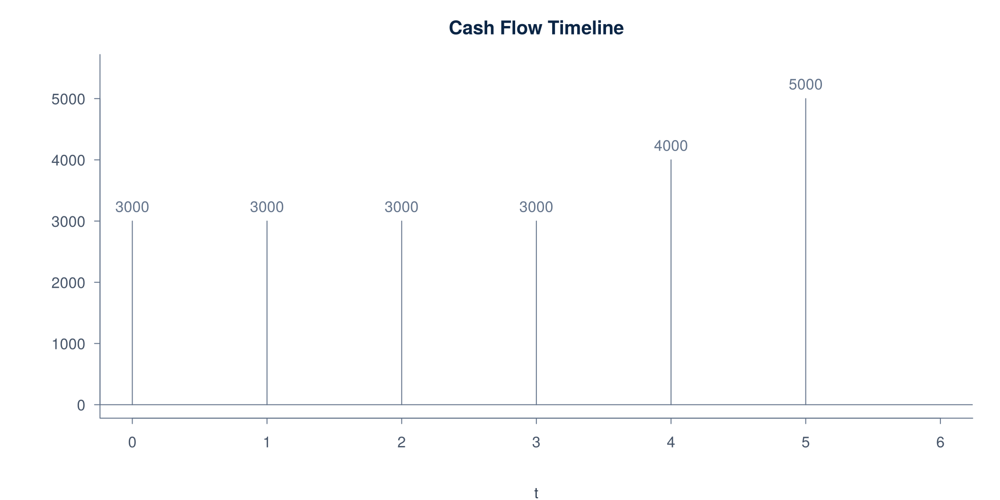
Let the annual interest rate be \(i = 0.0214\).
The discount factor \(v\) is calculated as follows: \[ v = \frac{1}{1+i} \]
A discount factor is a number used to calculate the present value of a future amount of money. It shows how much a future sum is worth today, considering a specific interest rate over time.
The discount factors for the time periods \(t = 0\) to \(t = 5\) are given by: \[ v^{(0:5)} = \left(v^0, v^1, v^2, v^3, v^4, v^5\right) \]
The present value (PV) of the cash flows is calculated as the sum of the cash flows multiplied by the corresponding discount factors: \[ \text{PV} = \sum_{t=0}^{5} (\text{cash flow at } t) \times v^t \]
# We have an expense of 3000 from t=0 to t=3, an expense of 4000 at t=4 and 5000 at t=5
# Cash flows
cash_flows <- c(rep(3000,4), 4000, 5000)
# Interest Rate
i <- 0.0214
# Discount factor
v <- 1 / (1+i)
# Discount factors
discount_factors <- v ^ (0:5)
# Present value PV
present_val <- sum(cash_flows * discount_factors)
cat("Present Value (PV):", present_val)## Present Value (PV): 19800.98So you would have to make a deposit of 19800.98 at this current time to cover all of these future payments.
These six payments are fixed and known, so the PV of 19800.98 is an exact number rather than an estimate. There is no sample to bootstrap and nothing to test: resampling the payments with replacement (as an earlier version did) shuffles which amount is paid when and doesn’t describe any real uncertainty.
What is uncertain is the interest rate you will actually earn. Below, the rate is assumed to be normally distributed around 2.14% with a standard deviation of 0.5% (an illustrative assumption), and we look at how the required deposit varies and how likely a round $20,000 deposit is to be enough.
set.seed(123)
n_sim <- 10000
rates <- rnorm(n_sim, mean = 0.0214, sd = 0.005)
pv_sim <- sapply(rates, function(r) sum(cash_flows * (1 + r) ^ -(0:5)))
cat("Middle 95% of the required deposit:", round(quantile(pv_sim, c(0.025, 0.975)), 2), "\n")## Middle 95% of the required deposit: 19293.99 20339.47## Probability that a $20,000 deposit is enough: 0.7717# Interest rate at which exactly $20,000 is needed
breakeven_rate <- uniroot(function(r) sum(cash_flows * (1 + r) ^ -(0:5)) - 20000, c(-0.05, 0.2))$root
cat("$20,000 is enough whenever the rate is at least", round(100 * breakeven_rate, 3), "%\n")## $20,000 is enough whenever the rate is at least 1.769 %hist(pv_sim, breaks = 50, main = "Required deposit under interest-rate uncertainty",
xlab = "Deposit needed today")
abline(v = c(present_val, 20000), col = c("red", "blue"), lwd = 2, lty = c(1, 2))
legend("topright", c("PV at 2.14%", "$20,000"), col = c("red", "blue"), lty = c(1, 2), lwd = 2)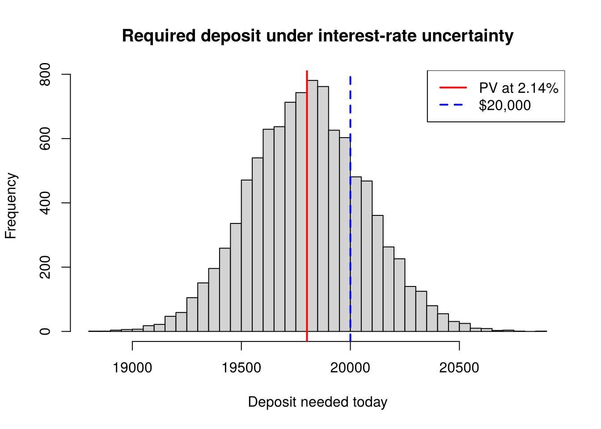
A higher interest rate means less needs to be deposited today, so $20,000 covers the trip as long as the rate stays above about 1.77%.
Net Present Value (NPV) is a financial metric that calculates the value of a series of future cash flows in today’s terms. It takes into account the time value of money by discounting future cash flows back to the present. NPV helps determine the profitability of an investment: a positive NPV indicates a good investment, while a negative NPV suggests it may not be worthwhile.
You’re the head of a lawn mowing company. You want to invest in a new lawn mower than you are confident will generate cash flows of 50 each month for 3 months, followed by 20 for 2 months. The issue is it costs 185 and you’re unsure if it will be a profitable investment. To find out if it is a good investment or not, you must calculate the NPV for this investment. Assume the monthly interest rate is 0.6%.
# Define the cash flows
cash_flows <- c(-185, rep(50, 3), rep(20, 2))
# Discount factors
monthly_interest_rate <- 0.006
discount_factors <- (1 + monthly_interest_rate) ^ -(0:5)
times <- 0:5
plot(times, cash_flows, type="n", xlab="Time (t)", ylab="Cash Flows", main="Cash Flow Timeline", ylim=c(-200, 70))
abline(h = 0)
segments(times, 0, times, cash_flows)
# Add text labels for the cash flows
text(times, cash_flows, labels=cash_flows, pos=ifelse(cash_flows < 0, 1, 3))
axis(1, at=times, labels=times)
axis(2, labels=FALSE)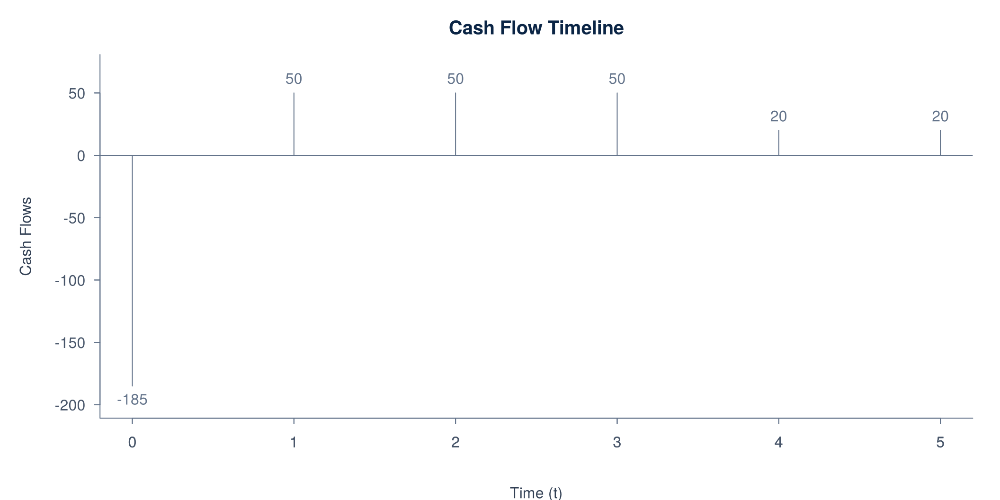
# NPV calculation
npv <- sum(cash_flows * discount_factors)
cat("Net Present Value (NPV):", npv, "\n")## Net Present Value (NPV): 2.155604The Net Present Value (NPV) is calculated using the formula: \[ \text{NPV} = -C_0 + \sum_{t=1}^{n} CF_t \, v^t, \qquad v = \frac{1}{1+r} \]
Where:
\( CF_t \) is the cash flow at time \( t \)
\( r \) is the monthly interest rate
\( C_0 \) is the initial investment cost
\( n \) is the number of periods
Given:
Cash flows: \( CF_1 = 50, CF_2 = 50, CF_3 = 50, CF_4 = 20, CF_5 = 20 \)
Initial investment: \( C_0 = 185 \)
Monthly interest rate: \( r = 0.006 \)
Since the NPV is positive (2.16), the mower is expected to be profitable, but only just: the margin is about 1% of the purchase price.
To better understand the risk of the investment, we can simulate the future cash flows under uncertainty(?). The purchase price is known, so only the monthly earnings vary; we assume each month’s earnings are off by a normally distributed amount with a standard deviation of 5 (an illustrative assumption).
# Simulation for NPV under uncertainty
set.seed(123)
n_simulations <- 1000
simulated_npvs <- replicate(n_simulations, {
# the price at t = 0 is fixed; only future earnings are uncertain
simulated_cash_flows <- cash_flows + c(0, rnorm(length(cash_flows) - 1, mean = 0, sd = 5))
sum(simulated_cash_flows * discount_factors)
})
# Calculate the mean and standard deviation of simulated NPVs
mean_npv <- mean(simulated_npvs)
sd_npv <- sd(simulated_npvs)
cat("Mean NPV:", mean_npv, "\n")## Mean NPV: 2.141236## Standard Deviation of NPV: 10.69528## Probability the investment loses money (NPV < 0): 0.408# Plot the distribution of simulated NPVs
hist(simulated_npvs, breaks = 30, main = "Distribution of Simulated NPVs", xlab = "NPV")
abline(v = mean_npv, col = "red", lwd = 2)
abline(v = 0, lty = 2)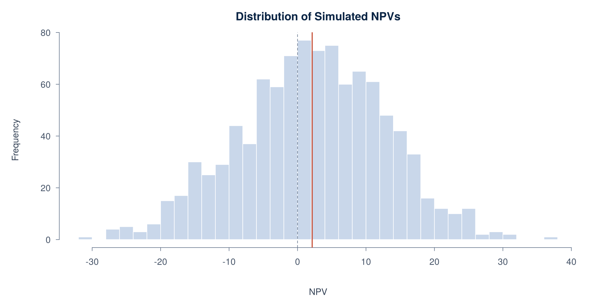
Because the expected NPV is so close to zero, modest variation in monthly earnings makes a loss quite likely (about 41% of simulations), so this is a marginal investment.
The total amount of money accumulated or earned over time from an initial investment or savings, including both the original amount invested (principal) and any interest or earnings gained on it.
Suppose instead of making those expenses, you chose to deposit the same amounts into a savings account at the same times. What is the present value of those deposits, and how much would the account hold at t = 6 (the accumulated value)?
## Cash flows: 3000 3000 3000 3000 4000 5000# Define the discount function
discount <- function(s, t, i = 0.0214) {
(1 + i) ^ - (t - s)
}
# Calculate the present value PV
pv <- sum(cash_flows * discount(0, 0:5))
cat("Present Value (PV):", pv)## Present Value (PV): 19800.98# Calculate the value at time 6
av <- sum(cash_flows * discount(6, 0:5))
cat("Accumulated Value (AV):", av)## Accumulated Value (AV): 22483.39# Calculate the value at time 6, starting from the PV
pv_at_6 <- pv * discount(6, 0)
cat("PV at time 6:", pv_at_6)## PV at time 6: 22483.39interest_earned <- av - sum(cash_flows)
cat("Total deposited:", sum(cash_flows), " Interest earned:", interest_earned)## Total deposited: 21000 Interest earned: 1483.386Saving instead of spending leaves 22483.39 in the account at t = 6: the 2.1^{4} you deposited plus 1483.39 of interest. The PV is unchanged (the same payments at the same times), and accumulating the PV to t = 6 gives exactly the AV, which is a useful consistency check.
To understand how sensitive the accumulated value is to changes in the interest rate, we can perform a sensitivity analysis(?) .
# Sensitivity analysis for different interest rates
interest_rates <- seq(0.01, 0.05, by = 0.005)
accumulated_values <- sapply(interest_rates, function(i) {
discount <- function(s, t) (1 + i) ^ - (t - s)
sum(cash_flows * discount(6, 0:5))
})
# Plot the sensitivity analysis
plot(interest_rates, accumulated_values, type = "b",
xlab = "Interest Rate", ylab = "Accumulated Value",
main = "Sensitivity Analysis of Accumulated Value")
abline(v = 0.0214, col = "red", lwd = 2, lty = 2)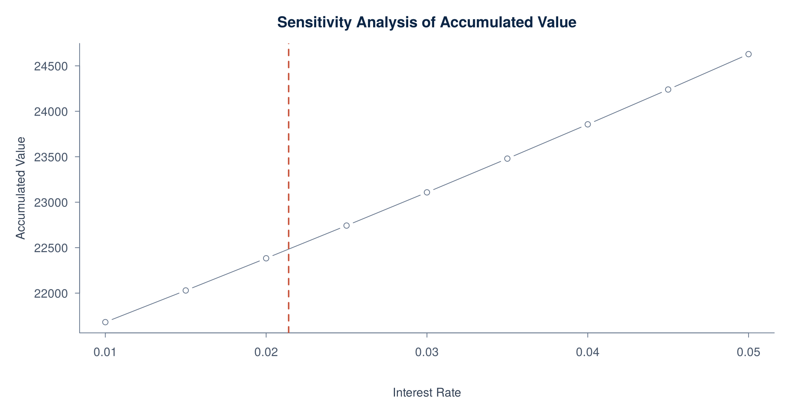
## Accumulated Values for different interest rates: 21680.71 22029.21 22383.25 22742.92 23108.29 23479.45 23856.48 24239.48 24628.53As with the PV, the AV is an exact number once the rate is fixed, so a bootstrap interval or hypothesis test around it isn’t meaningful. A more useful question is what rate you would need for the savings to reach a target, say $25,000 at t = 6.
target_av <- 25000
av_at <- function(r) sum(cash_flows * (1 + r) ^ (6 - 0:5))
required_rate <- uniroot(function(r) av_at(r) - target_av, c(0, 0.5))$root
cat("Interest rate needed for an AV of $25,000:", round(100 * required_rate, 3), "%\n")## Interest rate needed for an AV of $25,000: 5.47 %## Check: AV at that rate = 24999.85You would need about 5.47% a year, compared with the 2.14% assumed.
Your parents want to start saving money for your university costs. Each year of study will set you guys back by about 7500. You’re currently 14 (t=0) and will start attending when you are 19 (t=5). Therefore, your parents will make 1 deposit each year for 4 years (t=1 to t=4). Assume you will attend for 4 years (t=5 to t=8), the constant annual interest rate is 3.14% and each deposit your parents make is equal. Find the amount of the deposit
# discount factors
discount_factors <- (1 + 0.0314) ^ - (0:8)
# deposit pattern
deposits <- c(0, rep(1, 4), rep(0, 4))
# university expenses
payments <- c(rep(0, 5), rep(7500, 4))
# Calculate the PV of the deposits
PV_deposit <- sum(deposits * discount_factors)
# Calculate the PV of the payments
PV_payment <- sum(payments * discount_factors)
# Calculate the yearly deposit K in the first 4 years
yearly_deposit <- PV_payment / PV_deposit
cat("Yearly Payments =", yearly_deposit)## Yearly Payments = 6627.546# Cash flow timeline: deposits in (+), tuition out (-)
times <- 0:8
cash_flows <- yearly_deposit * deposits - payments
plot(times, cash_flows, type = "n", xlab = "Time (t)", ylab = "Cash Flows",
main = "Cash Flow Timeline", ylim = c(-9000, 9000), yaxt = "n")
abline(h = 0)
segments(times, 0, times, cash_flows)
nz <- cash_flows != 0
text(times[nz], cash_flows[nz], labels = round(cash_flows[nz], 2), pos = ifelse(cash_flows[nz] < 0, 1, 3))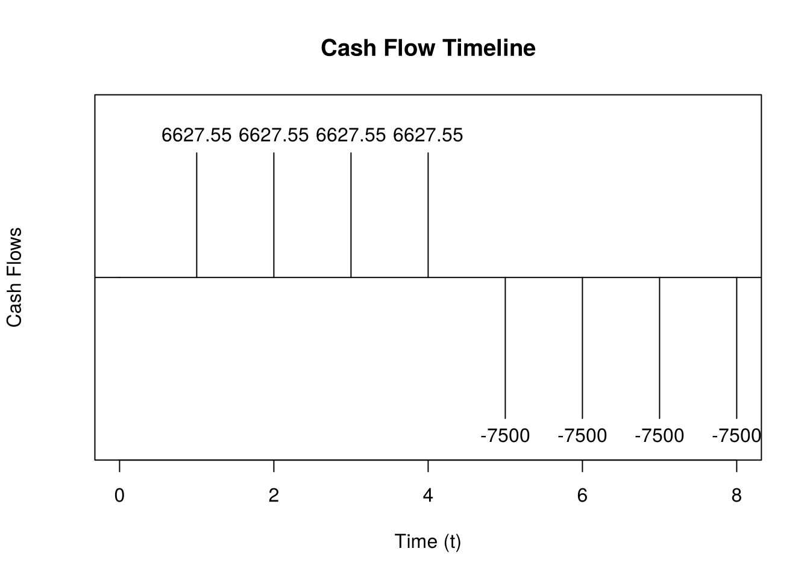
So your parents would have to make a deposit of 6627.55 for each of the 4 years to finance your university.
You want to take out a loan to open a new restaurant. You plan to take $1000 this year and $3000 next year. You plan to repay the money with equal yearly payments for the 10 years after next year (t=2 to t=11). Note this time the interest rate isn’t constant but changes over time. For the first 3 years it is 4%, then for the next 3 years it is 4.5%, then for the final 5 years it is 6%. How much will your yearly payments be?
# Interest rates
interest <- c(rep(0.04, 3), rep(0.045, 3), rep(0.06, 5))
# Yearly discount factors
yearly_discount_factors <- (1 + interest) ^ (-1)
# Discount factors
discount_factors <- cumprod(c(1, yearly_discount_factors))
# Cash flows for the first two years
cash_flow <- c(1000, 3000)
# Calculate the PV of the loan
PV_loan <- sum(cash_flow * discount_factors[1:2])
# Calculate the PV of the repayments
repayment_years <- 2:11
discount_factors_repayments <- discount_factors[repayment_years + 1]
n_payments <- length(discount_factors_repayments)
yearly_payment <- PV_loan / sum(discount_factors_repayments)
cash_flow_full <- c(cash_flow, rep(-yearly_payment, n_payments))
# Calculate the PV of the repayments to check the balance
PV_repayments <- sum(cash_flow_full * discount_factors)
# Display the yearly payment and the PV balance check
cat("Yearly payments =", yearly_payment, "\n")## Yearly payments = 515.2757## Net PV of loan minus repayments (should be 0) = -1.705303e-13# Cash flow timeline using the computed payment
# borrower's view: loan received (+), repayments paid (-)
cash_flows <- c(1000, 3000, rep(-round(yearly_payment, 2), 10))
time_periods <- 0:12
# Calculate padding for y-axis
y_padding <- max(abs(cash_flows)) * 0.2
plot(time_periods, rep(0, length(time_periods)), type = "n",
ylim = c(min(cash_flows) - y_padding, max(cash_flows) + y_padding),
xlim = c(0, 12),
xlab = "t", ylab = "",
main = "Cash Flow Timeline",
xaxt = "n", yaxt = "n")
axis(1, at = time_periods)
for (i in 1:length(cash_flows)) {
lines(c(i-1, i-1), c(0, cash_flows[i]))
if (i <= 4 || i >= 11) {
label <- round(cash_flows[i], 2)
} else if (i == 7) {
label <- "..."
} else {
next
}
text(i-1, cash_flows[i], labels = label,
pos = ifelse(cash_flows[i] > 0, 3, 1),
offset = 0.5)
}
# Add horizontal line
abline(h = 0)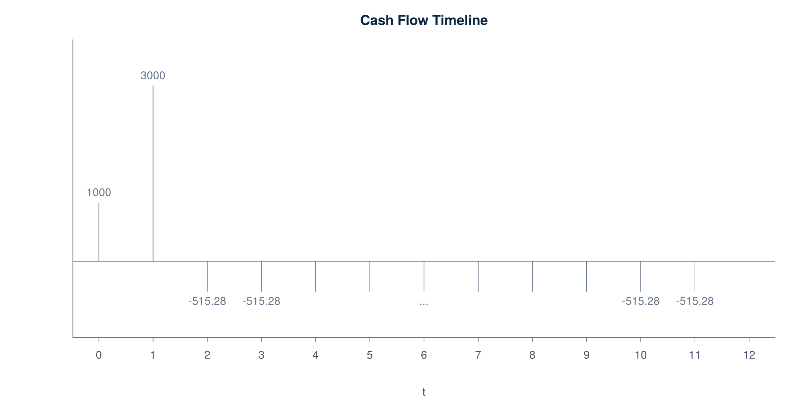
The net PV is ~0, meaning the PV of the repayments equals the PV of the loans, so the yearly payment is 515.2757.
To assess the variability in yearly payments, we can simulate different interest rate scenarios.
# Simulation for varying interest rates
set.seed(123)
n_simulations <- 1000
simulated_payments <- replicate(n_simulations, {
interest_sim <- c(rep(runif(1, 0.035, 0.045), 3), rep(runif(1, 0.04, 0.05), 3), rep(runif(1, 0.055, 0.065), 5))
yearly_discount_factors_sim <- (1 + interest_sim) ^ (-1)
discount_factors_sim <- cumprod(c(1, yearly_discount_factors_sim))
PV_loan_sim <- sum(cash_flow * discount_factors_sim[1:2])
repayment_years_sim <- 2:11
discount_factors_repayments_sim <- discount_factors_sim[repayment_years_sim + 1]
yearly_payment_sim <- PV_loan_sim / sum(discount_factors_repayments_sim)
return(yearly_payment_sim)
})
# Calculate the mean and standard deviation of simulated yearly payments
mean_payment <- mean(simulated_payments)
sd_payment <- sd(simulated_payments)
cat("Mean Yearly Payment:", mean_payment, "\n")## Mean Yearly Payment: 515.2269## Standard Deviation of Yearly Payment: 4.438351# Plot the distribution of simulated yearly payments
hist(simulated_payments, breaks = 30, main = "Distribution of Simulated Yearly Payments", xlab = "Yearly Payment")
abline(v = mean_payment, col = "red", lwd = 2)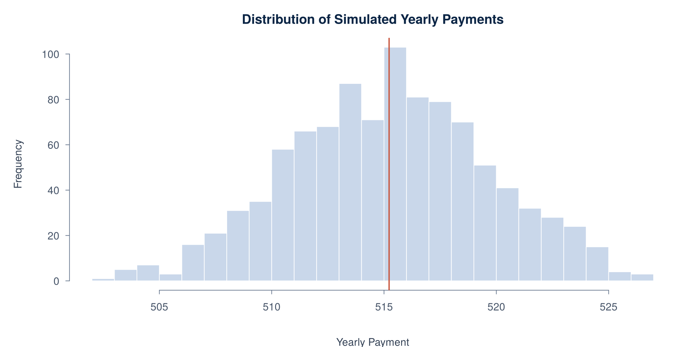
You plan to take out a 100,000 loan with a yearly interest rate of 2.88%. You want to pay back this loan with fixed monthly payments over the next 15 years. Find how much these monthly payments will be.
#number of payments
number_payments <- 12*15
#yearly interest rate
i <- 0.0288
#monthly interest rate
monthly_interest <- (1+i)^(1/12)-1
discount_factors <- (1 + monthly_interest) ^ - (1:number_payments)
payments <- rep(1, number_payments)
# Calculate the monthly loan payment K
K <- 100000 / sum(payments * discount_factors)
cat("Monthly loan payments =", K)## Monthly loan payments = 683.0401These monthly payments will be 683.0401.
Once the loan is signed the payment is fixed, but before you lock in a rate you don’t know exactly what you’ll be offered. Assuming the rate you’re offered is normally distributed around 2.88% with a standard deviation of 0.25% (an illustrative assumption), we can simulate the range of monthly payments.
# Simulated monthly payments for uncertain interest rates
set.seed(123)
n_sim <- 10000
sim_payments <- replicate(n_sim, {
i_sim <- rnorm(1, mean = 0.0288, sd = 0.0025)
monthly_sim <- (1 + i_sim)^(1/12) - 1
K_sim <- 100000 / sum((1 + monthly_sim) ^ - (1:number_payments))
return(K_sim)
})
# Middle 95% of simulated payments
ci_payments <- quantile(sim_payments, c(0.025, 0.975))
cat("Middle 95% of monthly payments:", ci_payments)## Middle 95% of monthly payments: 660.2183 705.9243## Probability the monthly payment exceeds $700: 0.0719rate_for_700 <- uniroot(function(r) 100000 / sum((1 + ((1 + r)^(1/12) - 1)) ^ -(1:number_payments)) - 700,
c(0, 0.2))$root
cat("Yearly rate at which the payment reaches $700:", round(100 * rate_for_700, 3), "%")## Yearly rate at which the payment reaches $700: 3.242 %Life tables are statistical tools used in demography and actuarial science to analyze mortality rates and life expectancy within a population. They provide a detailed breakdown of how long people are expected to live, based on age-specific mortality rates. Life tables tell us about the probability of surviving to different ages, expected years of life remaining at various ages, and are crucial for understanding population dynamics, healthcare planning, and insurance risk assessment.In data analysis beyond actuarial science, life tables serve as a model for understanding survival or retention rates in various contexts. For instance, in customer analytics, they can help predict how long customers are likely to remain active or how likely they are to churn based on historical data. Similarly, in medical research, life tables can be adapted to study survival rates after treatments or interventions. Essentially, life tables provide a structured way to analyze and predict durations or outcomes based on observed data, making them versatile tools across different fields of data analysis.
Import the life tables from mortality.org. We are going to import the dataset of Canada from 1921 - 2021.
## Year Age mx qx ax lx dx Lx Tx ex
## 1 1921 0 0.12226 0.11269 0.31 100000 11269 92174 5709930 57.10
## 2 1921 1 0.01671 0.01657 0.50 88731 1470 87996 5617756 63.31
## 3 1921 2 0.00797 0.00794 0.50 87260 693 86914 5529760 63.37
## 4 1921 3 0.00578 0.00576 0.50 86568 499 86318 5442846 62.87
## 5 1921 4 0.00465 0.00464 0.50 86069 400 85869 5356527 62.24
## 6 1921 5 0.00363 0.00363 0.50 85669 311 85514 5270658 61.52Setting up variables
year <- life_table$Year
age <- life_table$Age
qx <- life_table$qx
mx <- life_table$mx
ax <- life_table$ax
lx <- life_table$lx
dx <- life_table$dx
Lx <- life_table$Lx
Tx <- life_table$Tx
ex <- life_table$ex
px <- 1 - qx| Variable | Description |
|---|---|
| Year | Year or range of years (for period and cohort data) |
| Age | Age group, representing an n-year interval from exact age x to just before x + n, where n = 1, 4, 5, or infinity |
| m(x) | Central death rate between ages x and x + n |
| q(x) | Probability of death between ages x and x + n |
| a(x) | Average length of survival between ages x and x + n for persons dying in the interval |
| l(x) | Number of survivors at exact age x, assuming l(0) = 100,000 |
| d(x) | Number of deaths between ages x and x + n |
| L(x) | Number of person-years lived between ages x and x + n |
| T(x) | Number of person-years remaining after exact age x |
| e(x) | Life expectancy at exact age x (in years) |
Plotting the mortality rates from 1921 to 2021 for all ages
# Setting up the plot
par(xpd = TRUE, mar = c(5, 4, 4, 6) + 0.1)
convert_age <- function(x) {
x[x == "110+"] <- "110" # Here age is character in our dataset, need to change to numeric so that we don't run into issues with character
suppressWarnings({
as.numeric(x)
})
}
age <- convert_age(age)
years <- unique(year)
color_palette <- colorRampPalette(c("blue", "green", "yellow", "red"))(length(years))
plot2 <- plot(NULL,
xlim = range(age, na.rm = TRUE),
ylim = range(qx[qx > 0], na.rm = TRUE),
log = "y", # log scale: qx spans 0.0001 to 1
main = "Mortality rates (Canada, both sexes, 1921-2021)",
xlab = "Age x",
ylab = expression(paste("Mortality rate ", q[x], " (log scale)")),
type = "l"
)
suppressWarnings({
for (i in seq_along(years)) {
year_data <- subset(life_table, Year == years[i])
lines(year_data$Age, year_data$qx, col = color_palette[i], type = "l")
}
})
legend("topright", inset = c(-0.2,0),
legend = c("1921", "1955", "1988", "2021"),
col = color_palette[c(1, which.min(abs(years - 1955)),
which.min(abs(years - 1988)), length(years))],
lty = 1,
title = "Year")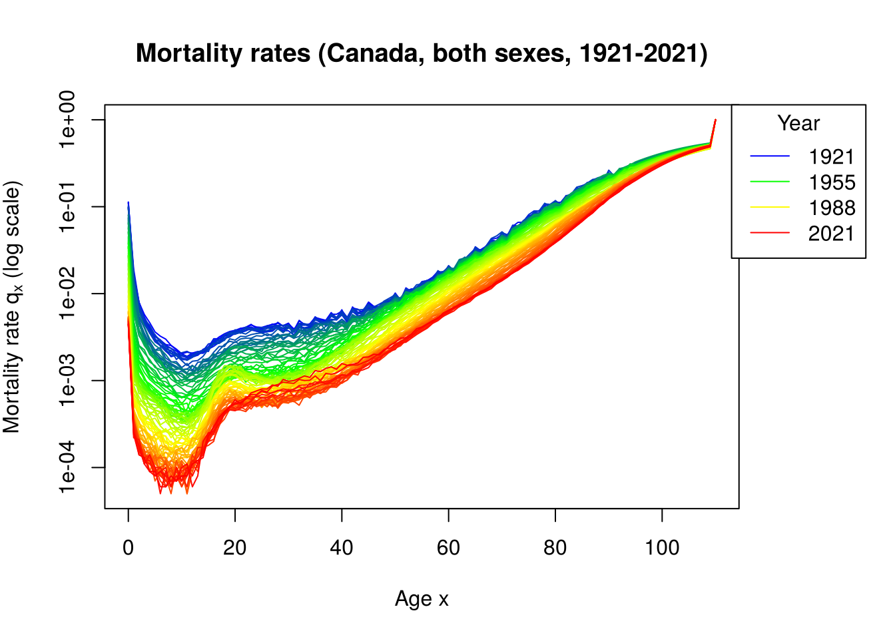
On a log scale the improvement is clear at every age: mortality in recent years is far lower than in the earliest years, with the biggest falls in infancy and childhood.
We can perform a two-proportion z-test to check whether the mortality
rate at age 50 changed between 1921 and 2021. One caveat: a life table’s
lx counts survivors out of a hypothetical 100,000 births, not the real
population, so using it as the sample size makes this an illustration. A
proper test would use the actual death counts and exposures (the HMD
Deaths_1x1 and Exposures_1x1 files).
# Hypothesis testing for mortality rates at age 50
row_1921 <- subset(life_table, Year == 1921 & Age == 50)
row_2021 <- subset(life_table, Year == 2021 & Age == 50)
mort_1921 <- row_1921$qx
mort_2021 <- row_2021$qx
# two-proportion z-test using each year's survivors at age 50 as the sample size
se <- sqrt(mort_1921 * (1 - mort_1921) / row_1921$lx + mort_2021 * (1 - mort_2021) / row_2021$lx)
t_stat <- (mort_2021 - mort_1921) / se
p_value <- 2 * pnorm(-abs(t_stat))
cat("q50 in 1921:", mort_1921, " q50 in 2021:", mort_2021, "\n")## q50 in 1921: 0.01016 q50 in 2021: 0.00275## z-statistic: -17.85743## P-value: 2.530244e-71if (p_value < 0.05) {
cat("We reject the null hypothesis that the mortality rate at age 50 has not changed between 1921 and 2021\n")
} else {
cat("We fail to reject the null hypothesis that the mortality rate at age 50 has not changed between 1921 and 2021\n")
}## We reject the null hypothesis that the mortality rate at age 50 has not changed between 1921 and 2021Plotting the life expectancy in Canada (both sexes combined) from the years 1921 - 2021
par(xpd = TRUE, mar = c(5, 4, 4, 6) + 0.1)
years <- unique(year)
color_palette <- colorRampPalette(c("blue", "green", "yellow", "red"))(length(years))
plot3 <- suppressWarnings({
plot(NULL,
xlim = range(age, na.rm = TRUE),
ylim = range(ex, na.rm = TRUE),
main = "Life Expectancy (Canada, both sexes, 1921-2021)",
xlab = "Age x",
ylab = expression(paste("Life Expectancy ", e[x])),
type = "l"
)
})
suppressWarnings({
for (i in seq_along(years)) {
year_data <- subset(life_table, Year == years[i])
lines(year_data$Age, year_data$ex, col = color_palette[i], type = "l")
}
})
legend("topright", inset = c(-0.2, 0),
legend = c("1921", "1955", "1988", "2021"),
col = color_palette[c(1, which.min(abs(years - 1955)),
which.min(abs(years - 1988)), length(years))],
lty = 1,
title = "Year")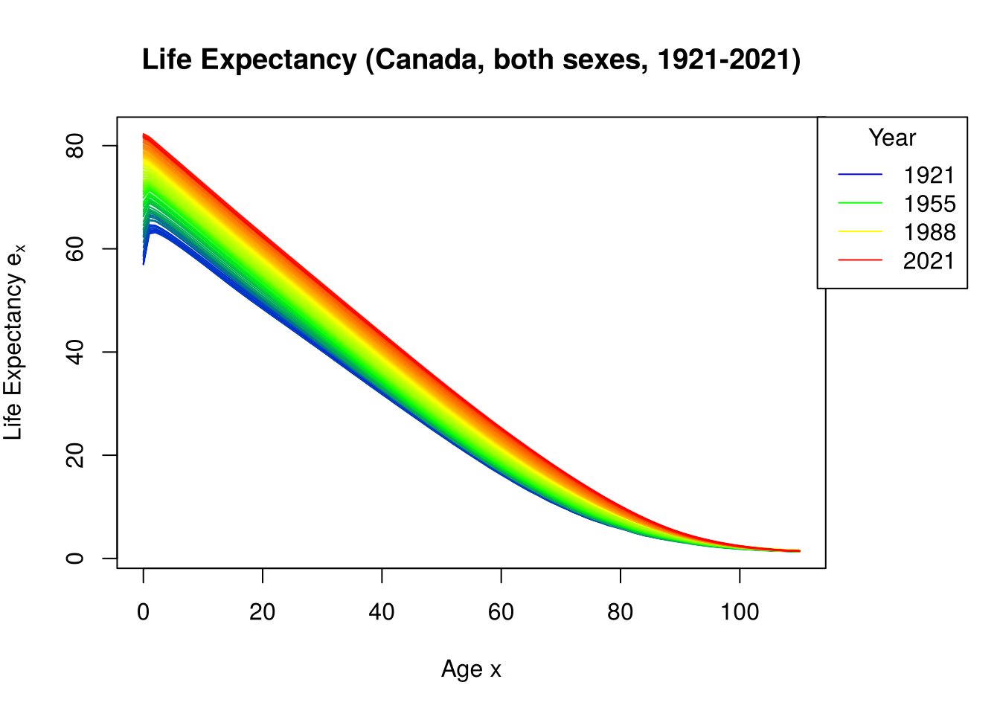
As we can see, the life expectancy is much higher from the years ~ 2021 as opposed to the years from ~1921 or even ~1955. Note for the early years, the life expectancy starts extremely low at age 0 and after a couple years, has a sharp increase. This can be explained mainly because it was much more difficult for an infant to survive the initial years. In later years, thanks to modern medicine, the survival rate of infants have risen much higher.
Each year has exactly one life expectancy at birth, calculated from that year’s mortality rates, so these are not repeated samples of one quantity. Averaging them, or bootstrapping them as an earlier version did, mixes a century of very different conditions into a single number that doesn’t describe any real population. It is more informative to look at the trend.
e0 <- subset(life_table, Age == 0)
plot(e0$Year, e0$ex, type = "l", lwd = 2, col = "darkgreen",
xlab = "Year", ylab = expression(e[0]), main = "Life expectancy at birth (Canada, both sexes)")
trend <- lm(ex ~ Year, data = e0)
abline(trend, lty = 2)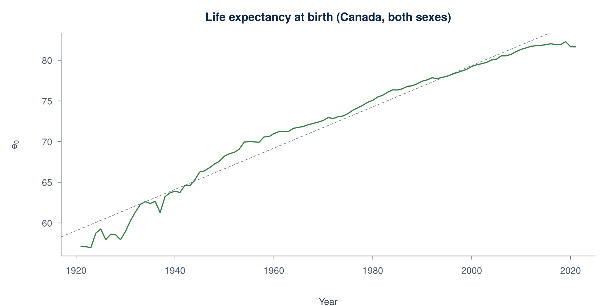
cat("Life expectancy at birth: 1921 =", e0$ex[e0$Year == 1921], " 2021 =", e0$ex[e0$Year == 2021], "\n")## Life expectancy at birth: 1921 = 57.1 2021 = 81.65## Average gain per decade (linear trend): 2.54 yearsLife expectancy at birth rose by about 2.5 years per decade over the century. The dip at the end is 2020-2021, the COVID-19 pandemic.
Let us focus on the year 2021.
2021 Life Table
life_table_2021 <- subset(life_table_all, Year == 2021) #Getting only data from the year 2021
year <- life_table_2021$Year
age <- life_table_2021$Age
qx <- life_table_2021$qx
mx <- life_table_2021$mx
ax <- life_table_2021$ax
lx <- life_table_2021$lx
dx <- life_table_2021$dx
Lx <- life_table_2021$Lx
Tx <- life_table_2021$Tx
ex <- life_table_2021$ex
px <- 1 - qxFinding the probability that an 23 year old dies before turning 24
## qx = 0.00072As we can see, it is a very low probability: about 0.072%.
The expected future lifetime of an 23 year old
## ex = 59.34Based on 2021 mortality rates, an average 23 year old in Canada is expected to live 59.34 more years.
Plot the mortality rates in the year 2021
suppressWarnings({
plot(age, qx,
main = "Mortality rates (Canada, 2021)",
xlab = "Age x",
ylab = expression(paste("Mortality rate ", q[x])),
type = "l")
})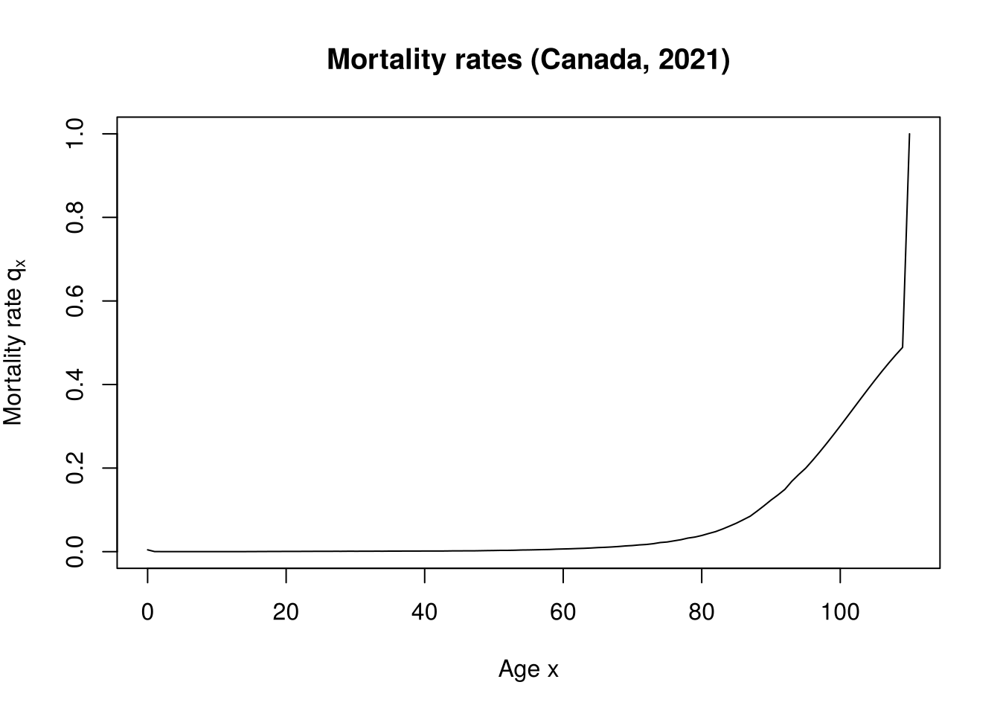
Plot the logarithm of the mortality rates in the year 2021
suppressWarnings({
plot(age, log(qx),
main = "Log mortality rates (Canada, 2021)",
xlab = "Age x",
ylab = expression(paste("Log mortality rate ", log(q[x]))),
type = "l")
})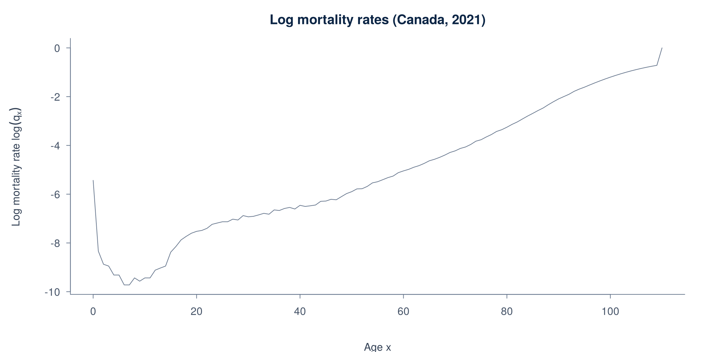
Plot the mortality rates of females vs males in the year 2021
We need to import the male and female datasets here
# Male and female tables are loaded in the setup chunk from data/mltper_1x1.txt
# and data/fltper_1x1.txt (HMD, Canada). Sections using them are skipped if absent.
male_2021 <- subset(life_table_m_all, Year == 2021)
age_m <- male_2021$Age
qx_m <- male_2021$qx
lx_m <- male_2021$lx
ex_m <- male_2021$ex
female_2021 <- subset(life_table_f_all, Year == 2021)
age_f <- female_2021$Age
qx_f <- female_2021$qx
lx_f <- female_2021$lx
ex_f <- female_2021$exThe male and female life tables (
data/mltper_1x1.txt,data/fltper_1x1.txt) are not included in this folder, so the male vs female comparisons below are skipped. Download them from mortality.org (Canada, period 1x1) to enable them.
Plot male vs female mortality rates in the year 2021
suppressWarnings({
plot(age_m, qx_m,
main = "Mortality rates (Canada, 2021)",
xlab = "Age x",
ylab = expression(paste("Mortality rate ", q[x])),
type = "l",
col = "blue",
)
# Add the female line to the same plot
lines(age_f, qx_f, col = "red")
legend("bottomright",
legend = c("Male", "Female"),
col = c("blue", "red"),
lty = 1,
cex = 0.8)
})suppressWarnings({
plot(age_m, qx_m,
main = "Mortality rates (Canadian Males and Females, 2021)",
xlab = "Age x",
ylab = expression(paste("Mortality rate ", q[x])),
type = "l",
col = "blue",
log = "y",
ylim = range(c(qx_m, qx_f))
)
lines(age_f, qx_f, col = "red")
grid()
points(age_m, qx_m, pch = 20, cex = 0.5, col = "blue")
points(age_f, qx_f, pch = 20, cex = 0.5, col = "red")
legend("bottomright",
legend = c("Males", "Females"),
col = c("blue", "red"),
lty = 1,
pch = 20,
cex = 0.8)
})As we can see, females on average for every age have a lower mortality rate than males. The gap only begins to narrow at the later ages, where it eventually becomes near equal around the age of 100. While there could be multiple reasons for this disparity, a study from Harvard states that one of the reasons could be because men have lower estrogen levels, hence they are more likely to die of heart disease
Find the probability for a 0 year old female and male in Canada to reach the age of 100 in 2021
male_prob <- lx_m[100 + 1] / lx_m[0 + 1]
print(paste("Male probability:", male_prob))
female_prob <- lx_f[100 + 1] / lx_f[0 + 1]
print(paste("Female probability:", female_prob))Find the probability for a 0 year old in Canada to reach the age of 100 in 2021
## [1] "M/F probability: 0.03606"If we compare this with an 18 year old individual
## [1] "M/F age 18 probability: 0.0363050591492575"Vs a 40 year old individual
## [1] "M/F age 40 probability: 0.0370583520029597"And again with a 75 year old individual
## [1] "M/F age 75 probability: 0.0473352585980572"Finally, compare with a 98 year old individual
## [1] "M/F age 98 probability: 0.534459759893286"ages <- c(0, 18, 40, 75, 98)
probs <- c(
lx[100 + 1] / lx[0 + 1],
lx[100 + 1] / lx[18 + 1],
lx[100 + 1] / lx[40 + 1],
lx[100 + 1] / lx[75 + 1],
lx[100 + 1] / lx[98 + 1]
)
prob_data <- data.frame(Age = c("0", "18", "40", "75", "98"), Probability = probs)
barplot(prob_data$Probability,
names.arg = prob_data$Age,
main = "Probability of Reaching Age 100 from Different Starting Ages",
xlab = "Starting Age",
ylab = "Probability",
col = "skyblue",
ylim = c(0, max(probs) * 1.1))
text(x = 1:5,
y = probs,
labels = round(probs, 5),
pos = 3,
cex = 0.8)
grid()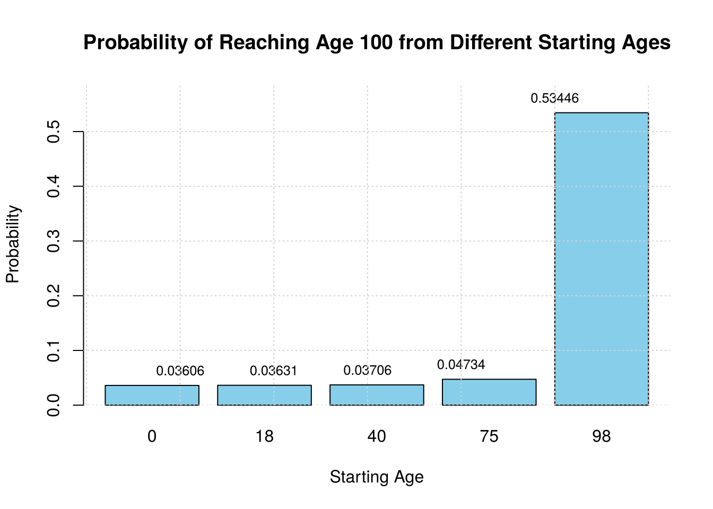
Plot the survival probabilties for (18) up to age 100
k <- 0:82
plot(k, lx[18 + k + 1] / lx[18 + 1],
pch = 20,
xlab = "k",
ylab = expression(paste(""[k], "p"[18])),
main = "Survival probabilities for age 18 up to 100")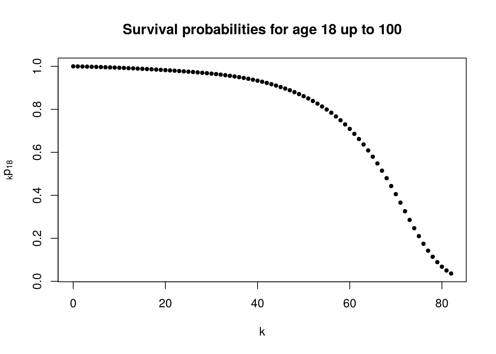
Compare this with a 50 year old
k <- 0:50
plot(k, lx[50 + k + 1] / lx[50 + 1],
pch = 20,
xlab = "k",
ylab = expression(paste(""[k], "p"[50])),
main = "Survival probabilities for age 50 up to 100")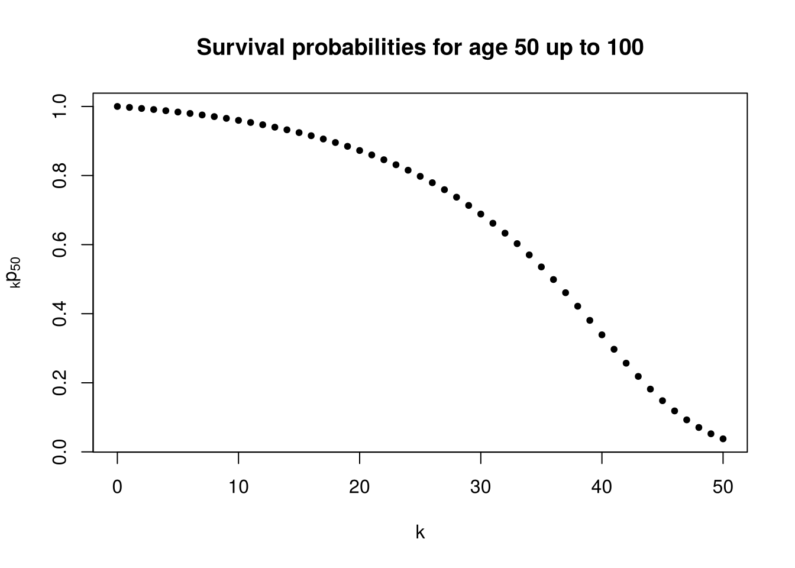
Plot the number of deaths
suppressWarnings({
plot(age, dx,
type = "h",
pch = 20,
xlab = "Age x",
ylab = expression("d"[x]),
main = "Number of deaths (Canada, M/F, 2021)")
# one simulated set of deaths: each of the lx survivors dies with probability qx
set.seed(123)
sims <- rbinom(n = length(lx), size = lx, prob = qx)
points(age, sims,
pch = 4,
col = "red")
legend("topleft", legend = c("Life table deaths", "Simulated (binomial)"),
col = c("black", "red"), lty = c(1, NA), pch = c(NA, 4))
})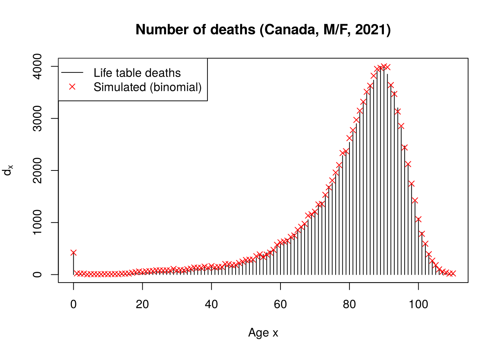
Calculate the probability that (25) survives 5 more years
px Calculation:
px typically represents the
survival probability (1 - qx) at each age x. In this context, it’s
assumed to be a sequence or vector containing survival probabilities for
each age from 25 onwards.
Subset of px:
px[(25 + 1):(29 + 1)] selects p25,
p26, p27, p28 and p29 (R vectors start at 1, so age x is stored at
position x + 1). These are the five one-year survival probabilities from
age 25 to age 30.
Product Calculation:
prod(px[(25 + 1):(29 + 1)]) multiplies them: surviving five years in a
row means surviving each single year, so 5p25 = p25 × p26 × p27 × p28 ×
p29.
value1 <- prod(px[(25 + 1):(29 + 1)])
cat("Prob that a 25 year old survives for 5 more years =", value1)## Prob that a 25 year old survives for 5 more years = 0.9956276How to interpret these results:
Each one-year survival probability at these ages is very close to 1, so even five years in a row gives a probability of about 99.56%. Survival probabilities fall as age increases: in 2021, p30 = 0.99902 (99.9% of 30-year-olds reach 31), p50 = 0.99725, p70 = 0.98535 and p90 = 0.8766. The decline is slow through middle age and much steeper after about 70, reflecting the increasing risk of death at older ages.
Compute the survival probabilities of (25) until the age of 100
Survival Probability (px):
px is a vector where
each element represents the probability of survival (1 - qx) at a
specific age x. It starts from age 25 and continues for subsequent
ages.
Subset of Survival Probabilities (px[(25 + 1):(99 +
1)]):
This selects p25 through p99 (positions 26 to 100),
the one-year survival probabilities needed to get from age 25 to age
100.
## Survival prob's of a 25 year old until 100 = 0.9992 0.9984006 0.9975121 0.9966542 0.9956276 0.9946519 0.9936573 0.992604 0.9914824 0.9904016 0.9891141 0.987858 0.9864947 0.9850742 0.9837443 0.9821998 0.9807265 0.9792162 0.9776593 0.9758506 0.9740257 0.972068 0.970153 0.9679798 0.9655212 0.962866 0.9599004 0.9569247 0.9536616 0.9499041 0.945981 0.9417336 0.9371285 0.932246 0.9266619 0.9206942 0.9143782 0.9075387 0.9002874 0.8924099 0.8837089 0.8745449 0.8647237 0.8540703 0.842361 0.8300204 0.8165907 0.8025617 0.7872889 0.7701418 0.7523361 0.7328732 0.711913 0.6888043 0.6647788 0.6390851 0.611336 0.5820286 0.5505234 0.5169249 0.4817068 0.4448996 0.407141 0.3675954 0.3271856 0.2868076 0.2478965 0.2109524 0.1754449 0.1430666 0.1145033 0.08950153 0.06820643 0.05058803 0.03645575How to interpret these results:
The output kpx gives the probability of a 25-year-old reaching each age from 26 to 100. For example, if kpx[1] is 0.9992, it means there’s a 99.92% chance that a 25-year-old individual will survive until age 26. Similarly, kpx[2] (0.9984006) represents the probability of surviving from age 25 to age 27, and so on.
Extract the probability that (25) survives until the age of 100
## Prob that a 25 year old survives until 100: 0.03645575Plot the probabilties for (25) to reach the age of 26, 27, …, 100
plot(1:length(kpx), kpx,
pch = 20,
xlab = "k",
ylab = expression(paste(""[k], "p"[25])),
main = "Survival probabilities for (25)")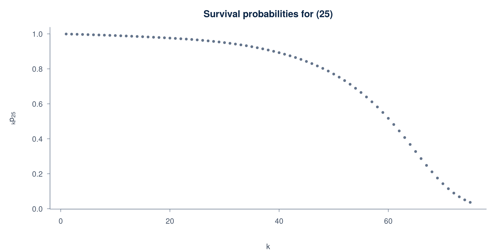
Curtate expected future lifetime is a statistical measure used in actuarial science and life insurance. It represents the expected number of whole years a person, starting at a given age, is expected to live into the future. This measure is calculated by considering the probability of surviving each year from the current age until the individual’s death. Curtate expected future lifetime provides valuable insights into life expectancy and is crucial for determining insurance premiums and retirement planning.
Compute the survival probabilities of (25)
## Survival prob's of a 25 year old: 1 0.9992 0.9984006 0.9975121 0.9966542 0.9956276 0.9946519 0.9936573 0.992604 0.9914824 0.9904016 0.9891141 0.987858 0.9864947 0.9850742 0.9837443 0.9821998 0.9807265 0.9792162 0.9776593 0.9758506 0.9740257 0.972068 0.970153 0.9679798 0.9655212 0.962866 0.9599004 0.9569247 0.9536616 0.9499041 0.945981 0.9417336 0.9371285 0.932246 0.9266619 0.9206942 0.9143782 0.9075387 0.9002874 0.8924099 0.8837089 0.8745449 0.8647237 0.8540703 0.842361 0.8300204 0.8165907 0.8025617 0.7872889 0.7701418 0.7523361 0.7328732 0.711913 0.6888043 0.6647788 0.6390851 0.611336 0.5820286 0.5505234 0.5169249 0.4817068 0.4448996 0.407141 0.3675954 0.3271856 0.2868076 0.2478965 0.2109524 0.1754449 0.1430666 0.1145033 0.08950153 0.06820643 0.05058803 0.03645575 0.02548512 0.01725751 0.0113047 0.007155764 0.004373102 0.002578643 0.001466681 0.000804665 0.0004259575 0.0002176983Compute the deferred mortality probabilities of (25)
Deferred Mortality Probabilities of a 25-Year-Old:
kqx[k + 1] is the deferred mortality probability k|q25: the
probability that a 25-year-old survives exactly k more years and then
dies in the following year, i.e. dies between ages 25 + k and 25 + k +
1.
Calculation:
It is the probability of
surviving k years, kp25, times the probability of dying in the next year
at the age then reached, q(25 + k): k|q25 = kp25 × q(25 + k).
Check:
Everyone dies at some age, so these
probabilities add up to 1 (q110 = 1 closes the table). In the chart
below, the peak shows the most likely age at death for someone who is 25
now.
## Deferred mortality prob's of a 25 year old: 8e-04 0.00079936 0.0008885766 0.0008578604 0.001026554 0.0009757151 0.0009946519 0.001053277 0.001121643 0.001080716 0.001287522 0.001256175 0.001363244 0.001420552 0.00132985 0.001544479 0.0014733 0.001510319 0.001556954 0.00180867 0.001824841 0.001957792 0.001914974 0.002173143 0.002458669 0.002655183 0.002965627 0.002975691 0.003263113 0.003757427 0.003923104 0.004247455 0.004605077 0.004882439 0.005584154 0.005967703 0.006315962 0.006839549 0.007251234 0.007877515 0.008700997 0.009164062 0.009821139 0.0106534 0.0117093 0.01234059 0.01342973 0.01402903 0.01527275 0.01714715 0.01780568 0.01946294 0.02096017 0.0231087 0.02402549 0.0256937 0.02774908 0.02930745 0.03150521 0.03359844 0.0352181 0.03680722 0.03775863 0.0395456 0.04040976 0.04037798 0.03891119 0.03694401 0.03550752 0.03237836 0.02856324 0.0250018 0.0212951 0.0176184 0.01413227 0.01097063 0.008227618 0.005952804 0.004148939 0.002782662 0.001794459 0.001111963 0.0006620157 0.0003787075 0.0002082591 0.0002176983## Sum (should be 1): 1## Most likely age at death: 89
Risk Assessment: Deferred mortality probabilities
provide a more accurate assessment of mortality risk over time. They
give the full distribution of the age at death, not just its
average.
Product Design: Insurance companies and pension
funds use deferred mortality probabilities to design products such as
life insurance policies and annuities. These products rely on accurate
estimates of how mortality risk changes with age to determine premiums
and payouts.
Financial Planning: Individuals and institutions use
deferred mortality probabilities for retirement planning and financial
forecasting. They help in estimating life expectancies and determining
the financial resources needed for retirement based on expected future
lifetimes.
Actuarial Calculations: Actuaries use deferred
mortality probabilities in complex calculations such as pension fund
valuations, reserve calculations, and risk assessments. These
calculations ensure that financial institutions have adequate reserves
to cover future obligations.
Long-Term Commitments: Many financial products, such
as pensions and annuities, involve long-term commitments spanning
several decades. Deferred mortality probabilities provide insights into
how mortality risk impacts these long-term financial
commitments.
Plot the deferred mortality probabilities of (25)
plot(0:(length(kqx) - 1), kqx,
pch = 20,
xlab = "k",
ylab = expression(paste(""['k|'], "q"[25])),
main = "Deferred mortality probabilities of (25)")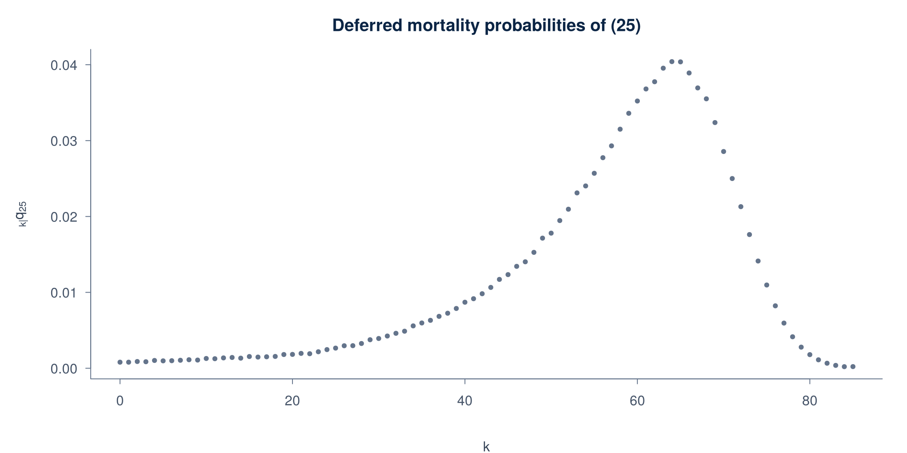
Survival probabilities and curtate expected future lifetime of (0)
## Survival prob's of a 0 year old 0.99563 0.995391 0.9952517 0.9951223 0.9950328 0.9949432 0.9948835 0.9948238 0.9947442 0.9946746 0.994595 0.9945154 0.9944061 0.9942867 0.9941575 0.9939288 0.9936406 0.993263 0.992826 0.9923295 0.9917937 0.9912383 0.9906336 0.9899204 0.989168 0.9883767 0.987586 0.986707 0.9858585 0.984843 0.9838779 0.982894 0.9818521 0.9807427 0.9796736 0.9784001 0.9771575 0.975809 0.9744039 0.9730884 0.9715607 0.9701033 0.9686094 0.9670693 0.9652802 0.9634751 0.9615385 0.9596443 0.9574947 0.9550627 0.9524362 0.9495027 0.9465593 0.9433315 0.9396148 0.9357342 0.9315327 0.9269775 0.922148 0.9166243 0.9107213 0.9044737 0.8977082 0.8905356 0.8827434 0.8741366 0.8650718 0.8553571 0.8448191 0.8332366 0.8210297 0.8077454 0.7938684 0.778761 0.7617996 0.7441868 0.7249347 0.7042016 0.6813432 0.6575779 0.6321626 0.6047141 0.5757241 0.5445601 0.5113256 0.476489 0.4400805 0.4027308 0.3636136 0.3236416 0.283701 0.2452112 0.2086674 0.1735445 0.1415169 0.113263 0.08853205 0.06746762 0.05004006 0.03606087 0.02520907 0.01707057 0.01118225 0.007078253 0.004325732 0.002550711 0.001450794 0.0007959489 0.0004213435 0.0002153402 0## Curtate expected future lifetime of a 0 year old 81.15437Survival probabilities and curtate expected future lifetime of a 25 year old
## Survival prob's of a 25 year old 0.9992 0.9984006 0.9975121 0.9966542 0.9956276 0.9946519 0.9936573 0.992604 0.9914824 0.9904016 0.9891141 0.987858 0.9864947 0.9850742 0.9837443 0.9821998 0.9807265 0.9792162 0.9776593 0.9758506 0.9740257 0.972068 0.970153 0.9679798 0.9655212 0.962866 0.9599004 0.9569247 0.9536616 0.9499041 0.945981 0.9417336 0.9371285 0.932246 0.9266619 0.9206942 0.9143782 0.9075387 0.9002874 0.8924099 0.8837089 0.8745449 0.8647237 0.8540703 0.842361 0.8300204 0.8165907 0.8025617 0.7872889 0.7701418 0.7523361 0.7328732 0.711913 0.6888043 0.6647788 0.6390851 0.611336 0.5820286 0.5505234 0.5169249 0.4817068 0.4448996 0.407141 0.3675954 0.3271856 0.2868076 0.2478965 0.2109524 0.1754449 0.1430666 0.1145033 0.08950153 0.06820643 0.05058803 0.03645575 0.02548512 0.01725751 0.0113047 0.007155764 0.004373102 0.002578643 0.001466681 0.000804665 0.0004259575 0.0002176983 0## Curtate expected future lifetime of a 25 year old 56.92983Complete expected future lifetime of (0) and (25)
## Expected future lifetime of a 0 and 25 year old 81.65 57.43
Function Purpose: The function
curtate_future_lifetime calculates the curtate expected
future lifetime for a given starting age using a life table
dataset.
Inputs:
age2: Represents the starting age for which we want
to compute the curtate expected future lifetime.
life_table: Contains mortality data including qx
(probability of dying between ages x and x+1) needed for
calculations.Steps:
life_table. qx represents the probability of dying between
ages x and x+1.age2 + 1
to the end of the dataset. This sequence represents the joint
probability of surviving each subsequent year after
age2.kpx) to obtain the curtate expected future lifetime, which
represents the expected number of full years an individual aged
age2 is expected to live from that age.Output: The function returns the computed curtate
expected future lifetime as a numeric value.
This function is crucial in actuarial science and insurance for estimating life expectancies and making financial projections based on mortality data.
suppressWarnings({
curtate_future_lifetime <- function(age2, life_table) {
qx <- life_table$qx
px <- 1 - qx
kpx <- cumprod(px[(age2 + 1):length(px)])
sum(kpx)
}
})Curtate future lifetimes for all ages
age2 <- life_table_2021$Age
valid_ages <- age2[!is.na(age2)]
future_lifetimes <- sapply(valid_ages, function(age) curtate_future_lifetime(age, life_table_2021))
cat("Future lifetimes for all ages:", future_lifetimes)## Future lifetimes for all ages: 81.15437 80.51057 79.5299 78.54103 77.55124 76.55822 75.56511 74.56965 73.57412 72.58001 71.58509 70.59082 69.59647 68.60412 67.61236 66.62115 65.63647 64.65551 63.68009 62.70812 61.73949 60.77285 59.8069 58.84341 57.8858 56.92983 55.97541 55.02023 54.06924 53.11578 52.17054 51.22172 50.27299 49.32634 48.38214 47.43494 46.49668 45.55581 44.61876 43.68311 42.74216 41.80937 40.87218 39.93522 38.99881 38.0711 37.14242 36.21723 35.28872 34.36794 33.45546 32.54771 31.64827 30.74669 29.85189 28.96997 28.09012 27.21681 26.35055 25.48856 24.64215 23.80188 22.96629 22.13937 21.31769 20.50586 19.70777 18.91428 18.1291 17.35523 16.59648 15.84323 15.10379 14.36781 13.64654 12.95037 12.25687 11.58238 10.92339 10.28986 9.661739 9.050179 8.460974 7.887018 7.338374 6.815344 6.313621 5.835957 5.377189 4.955662 4.567722 4.210785 3.871733 3.549788 3.268213 3.007865 2.758187 2.528673 2.318163 2.125515 1.949482 1.788679 1.641443 1.50579 1.378853 1.256235 1.13044 0.987482 0.7999053 0.51108 0How to interpret:
These are the expected number of years an individual, starting from each age, is expected to live based on the curtate expected future lifetime calculation.Each value corresponds to the expected future lifetime for individuals starting from different ages.
For example, the first value, 81.15, is for a newborn: about 81.15 complete years of future life. For a 25-year-old (the 26th value) it is 56.93. Curtate values are about half a year lower than the complete life expectancy ex, because they count only whole years lived. The values decrease as the starting age increases, reflecting the decreasing life expectancy as individuals age. These estimates are based on mortality data and assume that future mortality rates remain consistent with those observed in the life table used for calculation.
# Future lifetime by age
plot(age2[!is.na(age2)], future_lifetimes, type = 'l', lwd = 2, col = "green", xlab = "Age x", ylab = "Future lifetime", main = "Future lifetime by age")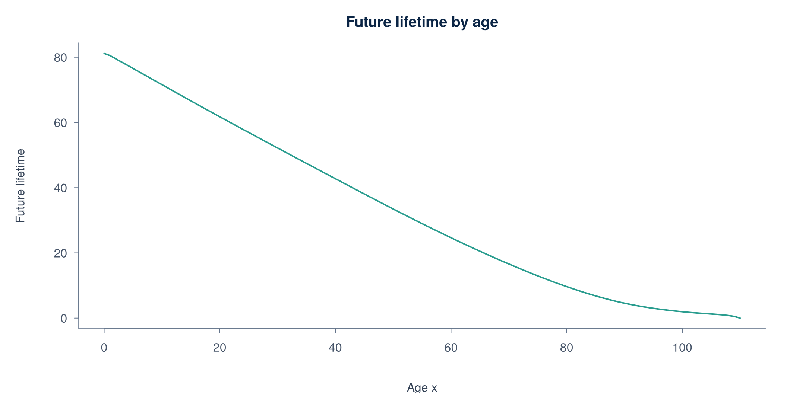
Plot the logarithm of the mortality rates for (18) by year (both sexes)
suppressWarnings({
life_table <- life_table_all
# Subset the life table for age 18
subset_18 <- subset(life_table, Age == 18)
if (nrow(subset_18) > 0) {
with(subset_18,
plot(Year, log(qx),
type = "l", main = "Log mortality rates (Canada, both sexes, age 18)",
xlab = "Year t", ylab = expression(paste("Log mortality rate ", log(q[18])))))
} else {
print("No data available for age 18")
}
})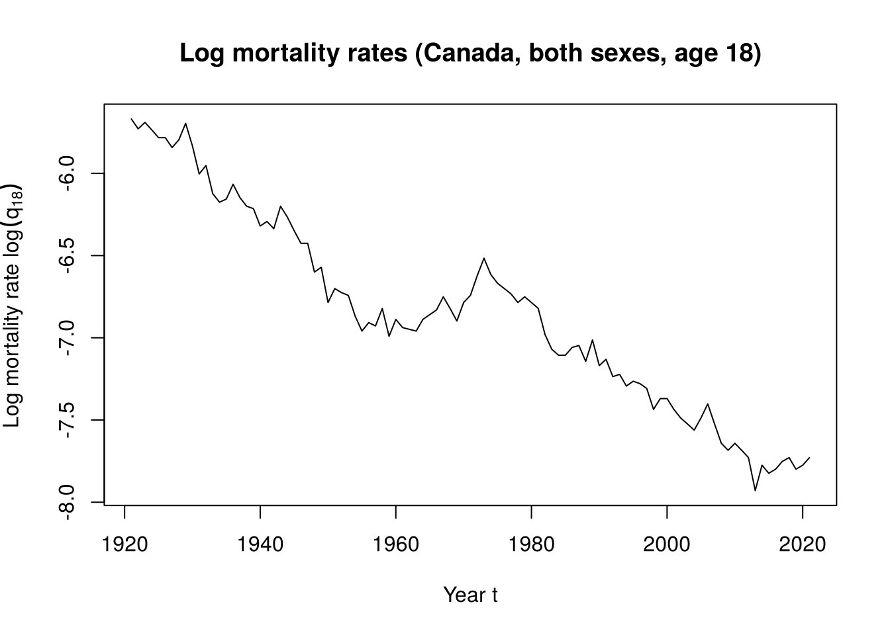
Plot the logarithm of the mortality rates in the year 1950 by age (both sexes)
# Subset the life table for the year 1950
subset_1950 <- subset(life_table, Year == 1950)
if (nrow(subset_1950) > 0) {
with(subset_1950,
plot(Age, log(qx),
type = "l", main = "Log mortality rates (Canada, both sexes, 1950)",
xlab = "Age x", ylab = expression(paste("Log mortality rate ", log(q[x])))))
} else {
print("No data available for the year 1950")
}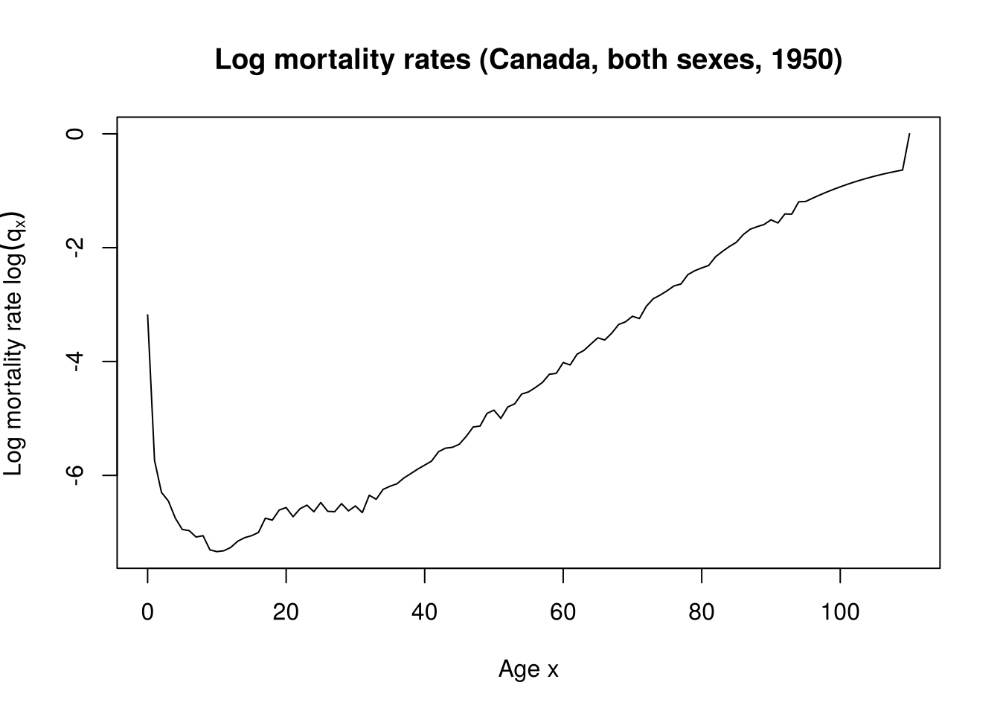
Constructing and printing the cohort life table for birth year 1981
A cohort table follows one birth year through time (age 0 in 1981, age 1 in 1982, … age 40 in 2021), instead of taking all ages from a single calendar year as a period table does. Because the data end in 2021, the 1981 cohort is only observed up to age 40.
## Year Age mx qx ax lx dx Lx Tx ex
## 6661 1981 0 0.00972 0.00963 0.13 100000 963 99161 7548411 75.48
## 6773 1982 1 0.00063 0.00063 0.50 99076 63 99045 7470238 75.40
## 6885 1983 2 0.00044 0.00044 0.50 99077 43 99056 7408421 74.77
## 6997 1984 3 0.00039 0.00039 0.50 99073 39 99053 7338302 74.07
## 7109 1985 4 0.00028 0.00028 0.50 99059 28 99045 7238256 73.07
## 7221 1986 5 0.00029 0.00029 0.50 99037 29 99022 7153349 72.23
## 7333 1987 6 0.00020 0.00020 0.50 99077 20 99066 7084561 71.51
## 7445 1988 7 0.00023 0.00023 0.50 99072 23 99061 6991848 70.57
## 7557 1989 8 0.00017 0.00017 0.50 99056 17 99048 6919036 69.85
## 7669 1990 9 0.00020 0.00020 0.50 99091 20 99081 6850504 69.13
## 7781 1991 10 0.00015 0.00015 0.50 99150 15 99143 6766861 68.25
## 7893 1992 11 0.00015 0.00015 0.50 99164 15 99157 6692921 67.49
## 8005 1993 12 0.00021 0.00021 0.50 99150 21 99140 6581079 66.37
## 8117 1994 13 0.00026 0.00026 0.50 99122 26 99109 6499918 65.57
## 8229 1995 14 0.00027 0.00027 0.50 99134 26 99121 6412031 64.68
## 8341 1996 15 0.00031 0.00031 0.50 99180 31 99165 6337554 63.90
## 8453 1997 16 0.00053 0.00053 0.50 99141 52 99115 6257835 63.12
## 8565 1998 17 0.00042 0.00042 0.50 99150 41 99130 6178885 62.32
## 8677 1999 18 0.00063 0.00063 0.50 99099 62 99068 6100645 61.56
## 8789 2000 19 0.00064 0.00064 0.50 99080 63 99048 6035708 60.92
## 8901 2001 20 0.00059 0.00059 0.50 99008 58 98979 5958898 60.19
## 9013 2002 21 0.00058 0.00058 0.50 98946 57 98917 5871755 59.34
## 9125 2003 22 0.00055 0.00055 0.50 98905 54 98878 5789571 58.54
## 9237 2004 23 0.00055 0.00055 0.50 98888 55 98861 5719518 57.84
## 9349 2005 24 0.00056 0.00056 0.50 98782 56 98755 5631507 57.01
## 9461 2006 25 0.00056 0.00056 0.50 98779 55 98751 5572998 56.42
## 9573 2007 26 0.00057 0.00057 0.50 98728 56 98700 5474686 55.45
## 9685 2008 27 0.00050 0.00050 0.50 98717 49 98693 5394059 54.64
## 9797 2009 28 0.00050 0.00050 0.50 98709 49 98684 5327781 53.97
## 9909 2010 29 0.00056 0.00056 0.50 98664 56 98636 5256681 53.28
## 10021 2011 30 0.00056 0.00056 0.50 98624 55 98596 5174985 52.47
## 10133 2012 31 0.00058 0.00058 0.50 98579 57 98551 5094853 51.68
## 10245 2013 32 0.00064 0.00064 0.50 98532 63 98500 5005052 50.80
## 10357 2014 33 0.00077 0.00077 0.50 98474 76 98436 4910497 49.87
## 10469 2015 34 0.00073 0.00073 0.50 98374 72 98338 4819383 48.99
## 10581 2016 35 0.00083 0.00083 0.50 98252 81 98211 4733277 48.17
## 10693 2017 36 0.00094 0.00094 0.50 98049 92 98003 4624539 47.17
## 10805 2018 37 0.00098 0.00098 0.50 97930 96 97882 4528434 46.24
## 10917 2019 38 0.00097 0.00097 0.50 97963 95 97916 4464141 45.57
## 11029 2020 39 0.00123 0.00123 0.50 97569 120 97509 4305572 44.13
## 11141 2021 40 0.00157 0.00157 0.50 97306 153 97230 4207847 43.241981 cohort one-year survival probabilities
## One year survival probabilities for 1981 birth year = 0.99037 0.99937 0.99956 0.99961 0.99972 0.99971 0.9998 0.99977 0.99983 0.9998 0.99985 0.99985 0.99979 0.99974 0.99973 0.99969 0.99947 0.99958 0.99937 0.99936 0.99941 0.99942 0.99945 0.99945 0.99944 0.99944 0.99943 0.9995 0.9995 0.99944 0.99944 0.99942 0.99936 0.99923 0.99927 0.99917 0.99906 0.99902 0.99903 0.99877 0.998431981 cohort survival probability that (18) survives 5 more years
prodp <- with(life_table_1981, prod(1 - qx[Age %in% 18:22]))
cat("Survival probability that an 18 year old survives 5 more years for 1981 birth year =", prodp)## Survival probability that an 18 year old survives 5 more years for 1981 birth year = 0.99701361903 cohort survival probability that (18) survives 5 more years (the data start in 1921, so 1903 is the earliest birth year observed at age 18)
prodp2 <- with(subset(life_table, Year - Age == 1903 & Age %in% 18:22), prod(1 - qx))
cat("Survival probability that an 18 year old survives 5 more years for 1903 birth year =", prodp2)## Survival probability that an 18 year old survives 5 more years for 1903 birth year = 0.981863PV of guaranteed payment of 10,000 in 5 years
## PV = 9057.3085 year survival probabilities of (20)
# Back to the 2021 period life table for the actuarial calculations
qx <- life_table_2021$qx
px <- 1 - qx
kpx <- prod(px[(20 + 1):(24 + 1)])
cat("kpx =", kpx)## kpx = 0.996814EPV of pure endowment of 10,000 in 5 years for (20)
## Expected Present value = 9028.452PV of guaranteed payments of 10,000 in 5, 10 and 30 years
## Present value = 9057.308 8203.483 5520.709Survival probabilities of (20)
## kpx = 0.99946 0.9989003 0.998291 0.9975722 0.996814 0.9960166 0.9952198 0.994334 0.9934789 0.9924556 0.991483 0.9904915 0.9894416 0.9883235 0.9872463 0.9859629 0.9847107 0.9833518 0.9819358 0.9806101 0.9790706 0.977602 0.9760965 0.9745445 0.9727416 0.9709225 0.968971 0.9670621 0.9648959 0.9624451 0.9597983 0.9568422 0.9538759 0.9506232 0.9468778 0.9429672 0.9387332 0.9341428 0.929276 0.9237096 0.9177609 0.9114651 0.9046473 0.8974192 0.8895668 0.8808935 0.8717586 0.8619688 0.8513493 0.8396773 0.827376 0.8139891 0.8000048 0.7847807 0.7676881 0.7499392 0.7305383 0.7096449 0.6866098 0.6626609 0.637049 0.6093883 0.5801743 0.5487694 0.515278 0.4801721 0.4434822 0.4058439 0.3664242 0.3261432 0.2858939 0.2471067 0.2102804 0.174886 0.1426108 0.1141385 0.08921638 0.06798913 0.05042685 0.03633961 0.02540393 0.01720253 0.01126869 0.007132966 0.004359169 0.002570428 0.001462008 0.0008021014 0.0004246004 0.0002170048 0EPV of pure endowments of 10,000 in 5, 10 and 30 years for (20)
## Expected Present Value = 9028.452 8141.593 5313.379A type of annuity where payments are made at the beginning of each period, starting immediately upon purchase and continuing for the lifetime of the annuitant. Payments start immediately and occur at the beginning of each payment period (e.g., monthly, annually)
Calculating the whole life annuity due of a 35 year old
kpx <-
c(1, cumprod(px[(35+1):length(px)]))
discount_factors <- (1+0.03)^-(0:(length(kpx)-1))
benefits <- rep(1,length(kpx))
wld <- sum(benefits*discount_factors*kpx)
cat("Whole life annuity due =", wld)## Whole life annuity due = 25.42672A type of annuity where payments are made at the end of each period, starting immediately upon purchase and continuing for the lifetime of the annuitant. Payments start immediately but occur at the end of each payment period (e.g., monthly, annually).
Calculating the whole life immediate annuity of a 35 year old
kpx <- cumprod(px[(35+1):length(px)])
discount_factors <- (1+0.03)^-(1:(length(kpx)))
benefits <- rep(1,length(kpx))
wid <- sum(benefits*discount_factors*kpx)
cat("Whole life immediate annuity =", wid)## Whole life immediate annuity = 24.42672EPV of a whole life annuity due for (20) at interest rate 2% using the 2021 life table
## EPV of whole life annuity due = 35.6006EPV of a whole life annuity due for (20) at interest rate 5% and for (65) at interest rate 2% using the 2021 life table
epv4 <- life_annuity_due(20, 0.05, life_table_2021)
cat("EPV of life annuity due for 20 year old at 5% interest rate =", epv4)## EPV of life annuity due for 20 year old at 5% interest rate = 19.6244epv5 <- life_annuity_due(65, 0.02, life_table_2021)
cat("EPV of life annuity due for 65 year old at 2% interest rate =", epv5)## EPV of life annuity due for 65 year old at 2% interest rate = 17.14954life_immediate_annuity <- function(age, i, lt) {
q <- lt$qx[(age + 1):nrow(lt)]
kpx <- cumprod(1 - q) # k p_x for k = 1, 2, ...
sum((1 + i) ^ -seq_along(q) * kpx) # payments at the end of each year
}EPV of a whole life immediate annuity for (20) at interest rate 2% using the 2021 life table
epv6 <- life_immediate_annuity(20, 0.02, life_table_2021)
cat("EPV of life annuity immediate for a 20 year old using 2% interest rate =", epv6, "\n")## EPV of life annuity immediate for a 20 year old using 2% interest rate = 34.6006# check: the immediate annuity is the annuity due without the first payment
cat("Annuity due - 1 =", epv3 - 1)## Annuity due - 1 = 34.6006library(shiny)
ui <- fluidPage(
titlePanel("Temporary Life Annuity Calculator"),
sidebarLayout(
sidebarPanel(
numericInput("age", "Age:", 20, min = 0, max = 110),
numericInput("term", "Term (years):", 10, min = 1, max = 50),
numericInput("interest", "Interest Rate:", 0.02, min = 0, max = 0.2, step = 0.001)
),
mainPanel(
h3("Expected Present Value:"),
textOutput("epv")
)
)
)
server <- function(input, output) {
output$epv <- renderText({
epv <- temporary_life_annuity_due(input$age, input$term, input$interest, life_table_2021)
paste0("$", round(epv, 2))
})
}
shinyApp(ui = ui, server = server)The live Shiny app can’t run on this static GitHub Pages site.
Open index.Rmd in RStudio, run the earlier chunks, then run
this chunk to launch it. Sample results:
| Age | Term | Interest | EPV |
|---|---|---|---|
| 20 | 10 | 0.02 | 9.1359 |
| 40 | 10 | 0.02 | 9.0961 |
| 65 | 10 | 0.02 | 8.6932 |
| 20 | 20 | 0.02 | 16.5599 |
| 40 | 20 | 0.02 | 16.3636 |
| 65 | 20 | 0.02 | 14.3728 |
| 20 | 10 | 0.05 | 8.0859 |
| 40 | 10 | 0.05 | 8.0527 |
| 65 | 10 | 0.05 | 7.7177 |
| 20 | 20 | 0.05 | 13.0037 |
| 40 | 20 | 0.05 | 12.8699 |
| 65 | 20 | 0.05 | 11.5110 |
EPV of a temporary life annuity due for (20) over 10 years at interest rate 2% using the 2021 life table
epvt <- temporary_life_annuity_due(20, 10, 0.02, life_table_2021)
cat("EPV of temporary life annuity due for 20 year old over 10 years at 2% interest rate =", epvt)## EPV of temporary life annuity due for 20 year old over 10 years at 2% interest rate = 9.13592Pension valuation is the process of determining the present value of future pension benefits that employees or retirees are entitled to receive from their employers or pension funds. It involves estimating the current worth of these future payments, taking into account factors such as inflation, mortality rates, interest rates, and the expected duration of payments.
Purpose: The primary goal of pension valuation is to assess the financial obligations of a pension plan or fund accurately. This helps pension managers, actuaries, and policymakers understand the funding requirements necessary to meet future pension obligations.
Factors Considered: Key factors considered in pension valuation include:
Discount Rates: Used to discount future cash flows to their present value, reflecting the time value of money and investment returns.
Mortality Assumptions: Expected longevity of pension recipients affects the duration and total amount of pension payments.
Inflation Rates: Adjustments for inflation ensure that future pension payments maintain their purchasing power.
Plan Design: Specific features of the pension plan, such as retirement age, payment options, and eligibility criteria, influence valuation calculations.Calculating the PV of a pension at age 65
The pension pays 20,000 a year from age 65 to age 100 (36 payments at the start of each year), increasing by 2% a year for inflation. Interest is 4% a year after 65 and 3% a year between 20 and 65, a simple non-flat interest-rate assumption. The PV ignores mortality; the EPV then accounts for the chance of dying before each payment.
benefits <- 20000 * 1.02 ^ (0:35)
discount_factors <- 1.04 ^ - (0:35)
PV_65 <- sum(benefits * discount_factors)
cat("PV of pension at age 65 =",PV_65)## PV of pension at age 65 = 523061## PV of pension at age 20 = 138317.5EPV of pension at age 20
# Survival probabilities of (65) up to age 100
px <- 1 - life_table_2021$qx
kpx <- c(1, cumprod(px[(65 + 1):(99 + 1)]))
EPV_65 <- sum(benefits * discount_factors * kpx)
cat("PV and EPV of pension at age 65 =", PV_65, EPV_65, "\n")## PV and EPV of pension at age 65 = 523061 343646.6EPV_20 <- EPV_65 * (1.03 ^ - 45 * prod(px[(20 + 1):(64 + 1)]))
cat("PV and EPV of pension at age 20 =", PV_20, EPV_20)## PV and EPV of pension at age 20 = 138317.5 80837.97You’re planning for your retirement at age 40. You want to buy an annuity that will provide you 10000 annually for life, starting at age 65. If you die before the annuity starts, you get paid nothing. Interest is 3% a year. The single premium is the EPV of the benefits.
# Survival probabilities of (40)
kpx <- c(1, cumprod(px[(40 + 1):length(px)]))
discount_factors <- (1 + 0.03) ^ -(0:(length(kpx) - 1))
benefits <- c(rep(0, 25), rep(10000, length(kpx) - 25))
single_premium <- sum(benefits * discount_factors * kpx)
cat("Single premium =",single_premium)## Single premium = 67100.94Suppose you want to finance this deferred life annuity with annual premiums payable for 25 years beginning at age 40 (only while you are alive). However, you plan to reduce your work hours from age 55 onwards, therefore the premium will reduce by 1 half after 15 years. What is the initial premium you will pay
# Premium pattern rho
rho <- c(rep(1, 15), rep(0.5, 10), rep(0, length(kpx) - 25))
initial_premium <- single_premium / sum(rho * discount_factors * kpx, na.rm = TRUE)
cat("Initial premium =", initial_premium, "\n")## Initial premium = 4530.234annual_premiums <- initial_premium * rho
filtered_annual_premiums <- annual_premiums[annual_premiums != 0]
cat("Filtered annual premiums =", filtered_annual_premiums, "\n")## Filtered annual premiums = 4530.234 4530.234 4530.234 4530.234 4530.234 4530.234 4530.234 4530.234 4530.234 4530.234 4530.234 4530.234 4530.234 4530.234 4530.234 2265.117 2265.117 2265.117 2265.117 2265.117 2265.117 2265.117 2265.117 2265.117 2265.117# Sum of the annual premiums (no actuarial discounting)
sap <- sum(filtered_annual_premiums)
cat("Sum of annual premiums =", sap, "\n")## Sum of annual premiums = 90604.67Find out if this product would be a favorable deal for you. What is the present value of what you would receive if you die at 75, or at 95, compared with the single premium of 6.710094^{4}?
## Curtate life expectancy of (40): 42.74216 years# PV of benefits received if (40) dies at a given age (payments at 65, 66, ..., up to that age)
pv_if_die_at <- function(death_age) {
k <- 0:(death_age - 40)
sum(benefits[k + 1] * discount_factors[k + 1])
}
cat("PV of benefits if death at 75 =", pv_if_die_at(75), "\n")## PV of benefits if death at 75 = 45516.78## PV of benefits if death at 95 = 98388.86# Break-even: first age at death where the PV of benefits exceeds the single premium
breakeven_age <- (65:109)[which(sapply(65:109, pv_if_die_at) >= single_premium)[1]]
cat("Break-even age at death:", breakeven_age)## Break-even age at death: 82If you die before about 82, you get back less (in present value) than the 6.710094^{4} you paid; if you live longer, you get back more. Dying at 75 returns 4.5517^{4}, a loss, and living to 95 returns 9.8389^{4}, a gain. The premium is the expected value of the benefits, so averaged over everyone who buys it the product is a fair deal (before any insurer profit or expenses). Whether it is a good deal for you depends on whether you expect to live longer than average.
Using GLMs to Model Mortality: the Gompertz Law
Adult mortality follows a well-known pattern called the Gompertz law: the death rate grows exponentially with age, so log(mx) is close to a straight line in age. That makes it a natural GLM: a Poisson model for the deaths dx, with a log link, Age as the predictor and log(Lx) (person-years lived) as an offset, so that the fitted quantity is the death rate mx = dx / Lx.
We fit ages 30-100 of the 2021 table. Below 30, mortality has an infant and young-adult accident “hump” that a straight line can’t capture. Above 100, the HMD values are themselves smoothed by a model rather than observed directly.
One caveat applies to every model in this section: a life table’s dx
and Lx are scaled to a hypothetical 100,000 births, not real counts. The
fitted rates are valid, but the standard errors, p-values and AIC values
describe that hypothetical population, so read them as relative rather
than absolute. Real counts are in the HMD Deaths_1x1 and
Exposures_1x1 files.
adults_2021 <- subset(life_table_2021, Age >= 30 & Age <= 100)
gompertz <- glm(dx ~ Age + offset(log(Lx)), family = poisson, data = adults_2021)
coef(gompertz)## (Intercept) Age
## -11.03696448 0.09916235b <- coef(gompertz)[["Age"]]
cat("Mortality rises by", round(100 * (exp(b) - 1), 1), "% per year of age;",
"it doubles every", round(log(2) / b, 1), "years\n")## Mortality rises by 10.4 % per year of age; it doubles every 7 yearsplot(adults_2021$Age, adults_2021$mx, log = "y", pch = 20, col = "blue",
xlab = "Age", ylab = expression(paste("Death rate ", m[x], " (log scale)")),
main = "Actual vs Gompertz GLM mortality rates (Canada, 2021)")
lines(adults_2021$Age, fitted(gompertz) / adults_2021$Lx, col = "red", lwd = 2)
legend("topleft", legend = c("Actual", "Gompertz GLM"), col = c("blue", "red"),
pch = c(20, NA), lty = c(NA, 1), lwd = c(NA, 2))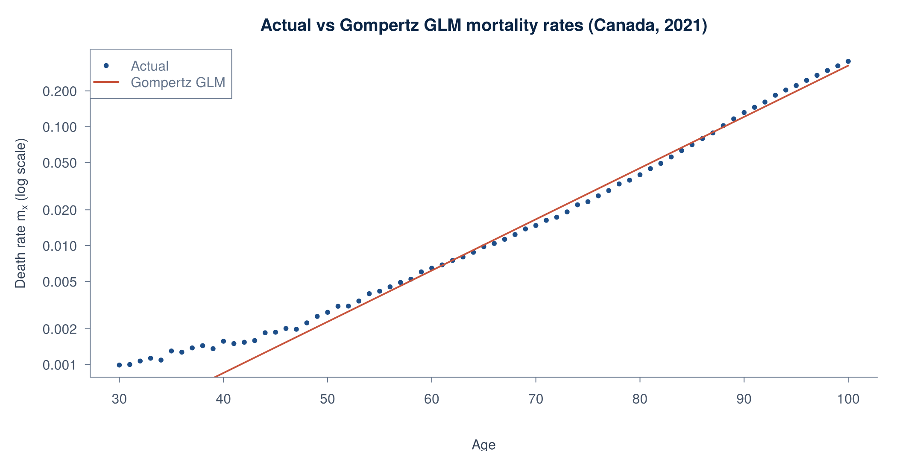
From about age 55 upward the fitted line tracks the data closely: mortality roughly doubles every 7 years of age, the classic Gompertz result. Between 30 and 55 the actual rates sit above the line, because deaths at those ages include more accidents, overdoses and other causes that don’t rise exponentially with age. The Poisson fit is driven by where most deaths happen (older ages), so it follows those ages most closely.
Why the earlier version of this chart looked wrong: it
plotted all 101 years (1921-2021) in one lines() call. Each
time the line reached age 110 for one year, it jumped back to age 0 for
the next year, and those jumps were the diagonal bands. It also fitted
qx as a logistic curve that is straight in age, which can’t represent
mortality that rises exponentially with age and also has an infant
spike. That’s why the red curve missed badly.
Adding calendar year: mortality improvement
Adding Year to the model measures how fast mortality has fallen over time at a given age.
adults_all <- subset(life_table_all, Age >= 30 & Age <= 100)
gompertz_year <- glm(dx ~ Age + Year + offset(log(Lx)), family = poisson, data = adults_all)
coef(gompertz_year)## (Intercept) Age Year
## 11.63542467 0.09063162 -0.01087277improvement <- 1 - exp(coef(gompertz_year)[["Year"]])
cat("Average mortality improvement:", round(100 * improvement, 2), "% per year\n")## Average mortality improvement: 1.08 % per yearshow_years <- c(1921, 1971, 2021)
cols <- c("darkorange", "darkgreen", "blue")
plot(NULL, xlim = c(30, 100), ylim = range(adults_all$mx), log = "y",
xlab = "Age", ylab = expression(paste("Death rate ", m[x], " (log scale)")),
main = "Actual (points) vs GLM (lines) by year")
for (j in seq_along(show_years)) {
yr <- subset(adults_all, Year == show_years[j])
points(yr$Age, yr$mx, pch = 20, cex = 0.6, col = cols[j])
lines(yr$Age, predict(gompertz_year, newdata = yr, type = "response") / yr$Lx, col = cols[j], lwd = 2)
}
legend("topleft", legend = show_years, col = cols, lwd = 2, title = "Year")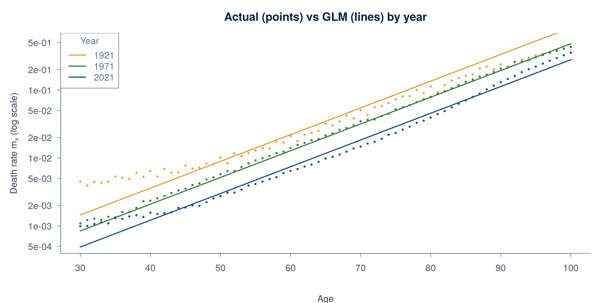
On average, adult mortality fell by about 1.1% a year. The model assumes the same improvement at every age and in every year, which is too simple, and the chart shows where it breaks down. In 1921 the actual rates sit above the line at younger ages and below it at older ages, meaning younger adults have since improved faster than average and the oldest more slowly. In 2021 the actual rates sit above the line at most ages, because improvement has slowed in recent years and 2021 was a pandemic year. The GAM below relaxes these assumptions.
A flexible model: a GAM over age and year
A generalized additive model (GAM) replaces the straight lines with a smooth surface over age and year, so improvement can differ by age. It uses the same Poisson setup, now over ages 0-100. An earlier version also used mx as a predictor; that is circular, because qx is calculated from mx, so the model was just recovering its own input.
## Loading required package: nlme##
## Attaching package: 'nlme'## The following object is masked from 'package:dplyr':
##
## collapse## This is mgcv 1.9-1. For overview type 'help("mgcv-package")'.ages_0_100 <- subset(life_table_all, Age <= 100)
# Smooth on log(age + 1): mortality changes very fast in the first few years of life,
# and the log scale stretches those ages out so the smooth can follow them
ages_0_100$log_age <- log(ages_0_100$Age + 1)
gam_model <- gam(dx ~ te(log_age, Year, k = c(20, 8)) + offset(log(Lx)), family = poisson, data = ages_0_100)
cat("Deviance explained:", round(100 * summary(gam_model)$dev.expl, 2), "%\n")## Deviance explained: 99.88 %plot(NULL, xlim = c(0, 100), ylim = range(ages_0_100$mx[ages_0_100$mx > 0]), log = "y",
xlab = "Age", ylab = expression(paste("Death rate ", m[x], " (log scale)")),
main = "Actual (points) vs GAM (lines) by year")
for (j in seq_along(show_years)) {
yr <- subset(ages_0_100, Year == show_years[j])
points(yr$Age, yr$mx, pch = 20, cex = 0.6, col = cols[j])
lines(yr$Age, fitted(gam_model)[ages_0_100$Year == show_years[j]] / yr$Lx, col = cols[j], lwd = 2)
}
legend("bottomright", legend = show_years, col = cols, lwd = 2, title = "Year")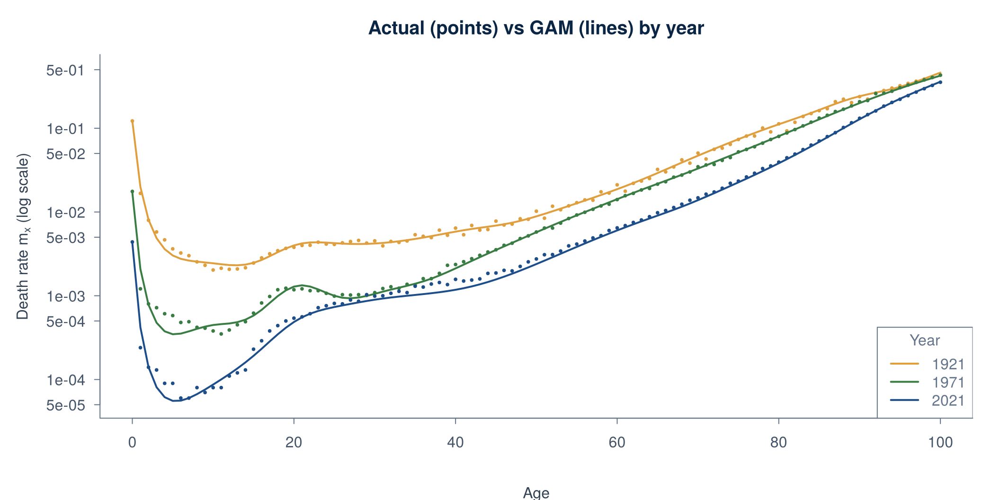
The GAM follows the whole age pattern, including infant mortality and the young-adult hump, and lets each age improve at its own pace. The largest gaps are at ages 5-15, where death rates are so low (around 1 in 10,000) that the yearly values are noisy.
You have bought a life insurance that is sold to 20 year olds and will pay 10000 at the end of the year of death if you die at age 30 (between your 30th and 31st birthdays). The payment would be made at age 31, 11 years from now. Using an interest rate of 1%, how much is the expected present value (EPV)?
qx <- life_table_2021$qx
px <- 1 - qx
# 10-year survival probability of (20)
kpx <- prod(px[(20 + 1):(29 + 1)])
cat("10p20 =", kpx, "\n")## 10p20 = 0.9924556## 10|q20 = 0.0009726065## v^11 = 0.8963237# EPV of the simple life insurance
cat("EPV of simple life insurance =",10000 * discount_factor * kqx)## EPV of simple life insurance = 8.717703whole_life_insurance <- function(age, i, lt) {
q <- lt$qx[(age + 1):nrow(lt)] # q_x, ..., q_110 (= 1)
kpx <- c(1, cumprod(1 - q))[seq_along(q)] # k p_x for k = 0, 1, ...
kqx <- kpx * q # k|q_x: dies in year k + 1
sum((1 + i) ^ -seq_along(q) * kqx) # paid at the end of the year of death
}
# Function to plot EPV by age
plot_by_age <- function(lt, interest_rate = 0.03) {
ages <- 0:(nrow(lt) - 1)
epvs <- sapply(ages, function(age) whole_life_insurance(age, interest_rate, lt))
plot(ages, epvs, type = "l", col = "blue",
main = "EPV of Whole Life Insurance by Age",
xlab = "Age", ylab = "EPV", lwd = 2)
}
# Function to plot EPV by interest rate for a given age
plot_by_interest_rate <- function(lt, target_age = 20) {
interest_rates <- seq(0.01, 0.1, by = 0.01)
epvs <- sapply(interest_rates, function(i) whole_life_insurance(target_age, i, lt))
plot(interest_rates, epvs, type = "l", col = "red",
main = paste("EPV of Whole Life Insurance for Age", target_age, "by Interest Rate"),
xlab = "Interest Rate", ylab = "EPV", lwd = 2)
}
plot_by_age(life_table_2021, interest_rate = 0.03)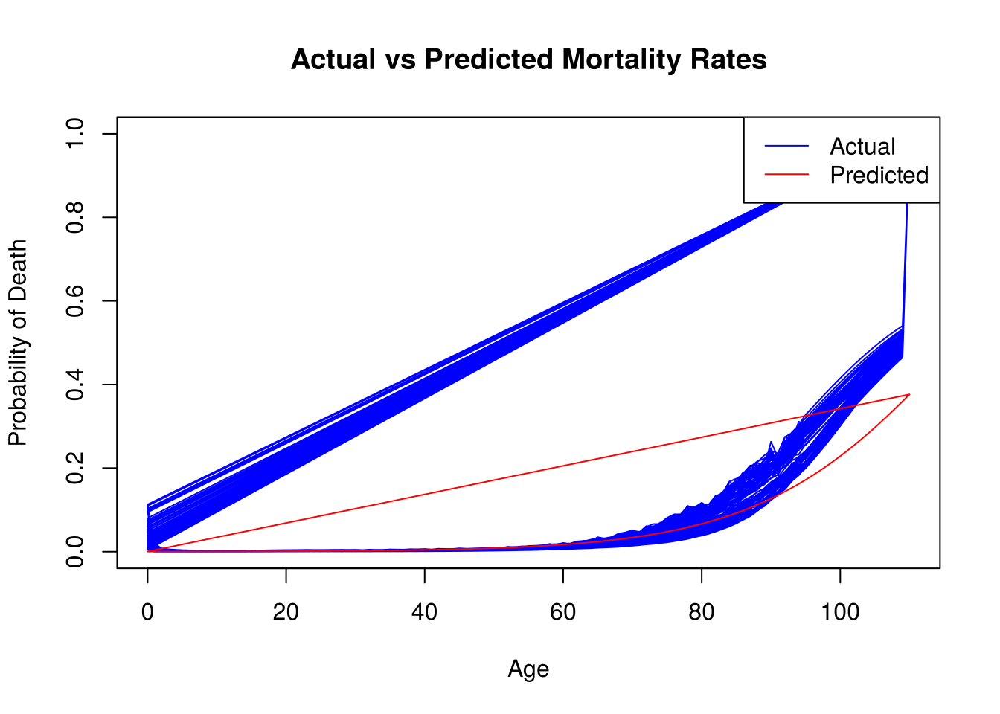
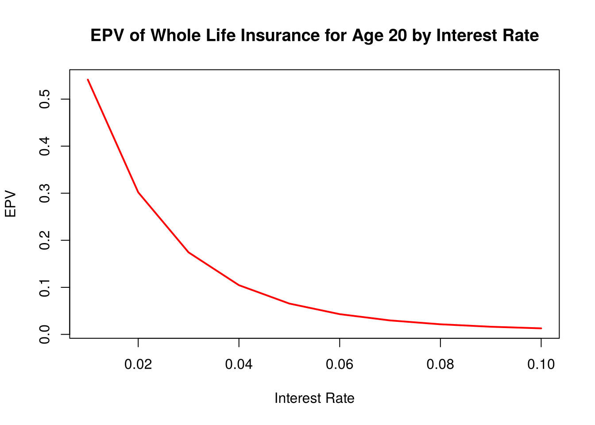
# Check against the annuity: for whole life, A_x = 1 - d * (annuity due), with d = i / (1 + i)
i_chk <- 0.03
cat("A_20 =", whole_life_insurance(20, i_chk, life_table_2021),
" 1 - d * annuity due =", 1 - i_chk / (1 + i_chk) * life_annuity_due(20, i_chk, life_table_2021))## A_20 = 0.174263 1 - d * annuity due = 0.174263Finding the EPV of a life insurance where the coverage is restricted in time for a 20 year old in Canada in 2021 using an interest rate of 2%
# Function to compute the EPV of a temporary life insurance
temporary_life_insurance <- function(age, n, i, lt) {
q <- lt$qx[(age + 1):nrow(lt)]
n <- min(n, length(q))
kpx <- c(1, cumprod(1 - q))[1:n]
kqx <- kpx * q[1:n] # deaths in the first n years only
sum((1 + i) ^ -(1:n) * kqx)
}
cat("EPV of a temporary life insurance for (20) over a period of 45 years at interest rate 2% =",temporary_life_insurance(20, 45, 0.02, life_table_2021))## EPV of a temporary life insurance for (20) over a period of 45 years at interest rate 2% = 0.059754cat(" EPV of a whole life insurance for (20) at interest rate 2% =",whole_life_insurance(20, 0.02, life_table_2021))## EPV of a whole life insurance for (20) at interest rate 2% = 0.301949Calculating EPV of a deferred life insurance for constant interest rate on age x
qx), survival
probabilities (kpx), and discount factors based on a
constant interest rate (i). The deferred period
(u) is taken into account to determine when the insurance
benefits start to be paid. The EPV is the sum of the discounted expected
benefits.
# Function to compute the EPV of a deferred whole life insurance
deferred_life_insurance <- function(age, u, i, lt) {
q <- lt$qx[(age + 1):nrow(lt)]
kpx <- c(1, cumprod(1 - q))[seq_along(q)]
kqx <- kpx * q
covered <- seq_along(q) > u # no cover for deaths in the first u years
sum(covered * (1 + i) ^ -seq_along(q) * kqx)
}
cat("EPV of a deferred life insurance for (20) deferred over 45 years at interest rate 2% =",deferred_life_insurance(20, 45, 0.02, life_table_2021), "\n")## EPV of a deferred life insurance for (20) deferred over 45 years at interest rate 2% = 0.242195# Check: 45-year temporary cover + cover deferred 45 years = whole life cover
cat("Temporary + deferred =", temporary_life_insurance(20, 45, 0.02, life_table_2021) + deferred_life_insurance(20, 45, 0.02, life_table_2021),
" Whole life =", whole_life_insurance(20, 0.02, life_table_2021))## Temporary + deferred = 0.301949 Whole life = 0.301949Suppose you are age 48 and want to insure a benefit of 40000 for death between the ages of 55 and 75 (paid at the end of the year of death). Assume interest rate is 5%
qx), survival
probabilities (kpx), and discount factors based on an
interest rate (i) to calculate the EPV of these benefits.
# Deferred mortality probabilites of (48)
kqx <- c(1, cumprod(px[(48 + 1):(73 + 1)])) * qx[(48 + 1):(74 + 1)]
i <- 0.05
discount_factors <- (1 + i) ^ - (1:length(kqx))
benefits <- c(rep(0, 7), rep(40000, length(kqx) - 7))
EPV_death_benefits <- sum(benefits * discount_factors * kqx)
cat("EPV of death benefits =",EPV_death_benefits)## EPV of death benefits = 2909.69Now suppose you want to add a savings component to the policy that will add 80000 if you are alive at age 75. You want to finance this endowment insurance with constant premiums.
# Pure endowment
EPV_pure_endowment <- 80000 * (1 + i) ^ - 27 * prod(px[(48 + 1):(74 + 1)])
cat(" EPV of pure endowment =",EPV_pure_endowment)## EPV of pure endowment = 17010.2# Premium pattern
kpx <- c(1, cumprod(px[(48 + 1):(73 + 1)]))
discount_factors <- (1 + i) ^ - (0:(length(kpx) - 1))
rho <- rep(1, length(kpx))
EPV_rho <- sum(rho * discount_factors * kpx)
cat("Premium pattern EPV = ",EPV_rho)## Premium pattern EPV = 14.65072## Premium level = 1359.652library(shiny)
ui <- fluidPage(
titlePanel("Life Insurance Calculator"),
sidebarLayout(
sidebarPanel(
numericInput("age", "Age:", 20, min = 0, max = 110),
numericInput("interest", "Interest Rate:", 0.02, min = 0, max = 0.2, step = 0.001),
selectInput("type", "Insurance Type:",
choices = c("Whole Life" = "whole",
"Temporary" = "temp",
"Deferred" = "deferred")),
conditionalPanel(
condition = "input.type == 'temp' || input.type == 'deferred'",
numericInput("term", "Term/Deferment (years):", 10, min = 1, max = 50)
)
),
mainPanel(
h3("Expected Present Value:"),
textOutput("epv")
)
)
)
server <- function(input, output) {
output$epv <- renderText({
epv <- switch(input$type,
"whole" = whole_life_insurance(input$age, input$interest, life_table_2021),
"temp" = temporary_life_insurance(input$age, input$term, input$interest, life_table_2021),
"deferred" = deferred_life_insurance(input$age, input$term, input$interest, life_table_2021))
paste0("$", round(epv, 2))
})
}
shinyApp(ui = ui, server = server)The live Shiny app can’t run on this static GitHub Pages site.
Open index.Rmd in RStudio, run the earlier chunks, then run
this chunk to launch it. Sample results:
| Age | Interest | Whole life | Temporary (20 yrs) | Deferred (20 yrs) |
|---|---|---|---|---|
| 20 | 0.02 | 0.3019 | 0.0154 | 0.2866 |
| 40 | 0.02 | 0.4343 | 0.0452 | 0.3890 |
| 65 | 0.02 | 0.6637 | 0.3284 | 0.3354 |
| 20 | 0.05 | 0.0655 | 0.0112 | 0.0543 |
| 40 | 0.05 | 0.1470 | 0.0321 | 0.1148 |
| 65 | 0.05 | 0.3865 | 0.2335 | 0.1530 |
library(survival)
# Each age is one group of deaths, weighted by how many of the 100,000 died at that age
deaths_2021 <- data.frame(age_at_death = life_table_2021$Age + 1, # died before the next birthday
weight = life_table_2021$dx)
deaths_2021 <- subset(deaths_2021, weight > 0)
km_fit <- survfit(Surv(age_at_death) ~ 1, data = deaths_2021, weights = weight)
plot(km_fit, conf.int = FALSE, xlab = "Age", ylab = "Survival Probability",
main = "Kaplan-Meier Estimate of Survival Probability (Canada, 2021)")
points(life_table_2021$Age, life_table_2021$lx / 1e5, pch = 20, cex = 0.5, col = "red")
legend("bottomleft", legend = c("Kaplan-Meier", "Life table lx / 100,000"),
col = c("black", "red"), lty = c(1, NA), pch = c(NA, 20))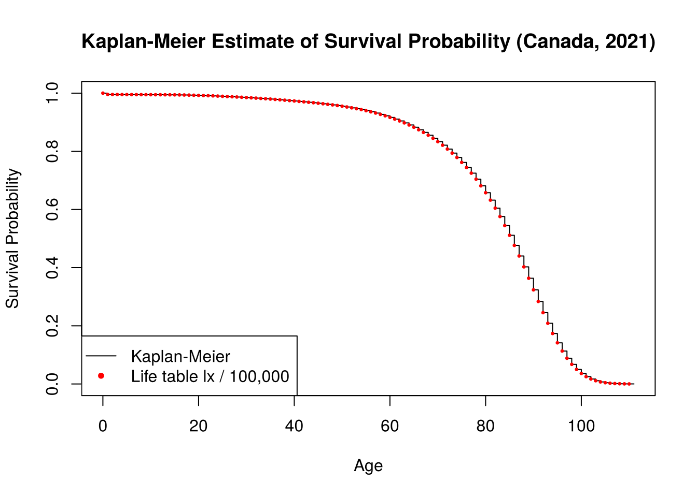
We can use the Cox Proportional Hazards model to analyze the effect of covariates on survival time.
deaths_by_year <- function(yr) {
t <- subset(life_table_all, Year == yr & dx > 0)
data.frame(age_at_death = t$Age + 1, weight = t$dx, period = factor(yr))
}
cox_data <- rbind(deaths_by_year(1951), deaths_by_year(2021))
cox_data$period <- relevel(cox_data$period, ref = "1951")
cox_model <- coxph(Surv(age_at_death) ~ period, data = cox_data, weights = weight)
hr <- exp(coef(cox_model))
cat("Hazard ratio, 2021 vs 1951:", round(hr, 3), "\n")## Hazard ratio, 2021 vs 1951: 0.416km_two <- survfit(Surv(age_at_death) ~ period, data = cox_data, weights = weight)
plot(km_two, col = c("darkorange", "blue"), lwd = 2, xlab = "Age", ylab = "Survival Probability",
main = "Survival curves: 1951 vs 2021 (Canada, both sexes)")
legend("bottomleft", legend = c("1951", "2021"), col = c("darkorange", "blue"), lwd = 2)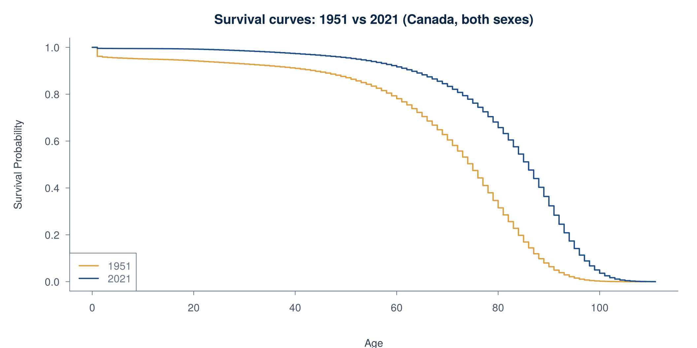
# The proportional-hazards assumption: compare the actual mortality ratio by age
ratio_by_age <- subset(life_table_all, Year == 2021 & Age <= 100)$mx /
subset(life_table_all, Year == 1951 & Age <= 100)$mx
plot(0:100, ratio_by_age, type = "l", log = "y", xlab = "Age",
ylab = "m(x) in 2021 / m(x) in 1951 (log scale)", main = "Is the hazard ratio constant by age?")
abline(h = hr, col = "red", lty = 2)
legend("bottomright", legend = c("Actual ratio", "Cox hazard ratio"), col = c("black", "red"), lty = c(1, 2))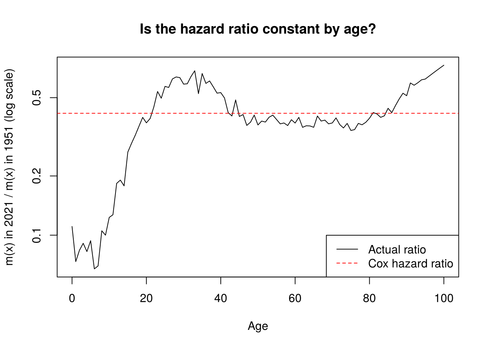
The Cox model says that, averaged over ages, the risk of death in 2021 was about 58% lower than in 1951. The second chart shows why this should be read with care: the actual ratio isn’t constant. Mortality fell by about 90% in childhood, by roughly 35-60% at adult ages, and by only about 25% at age 100, so the proportional-hazards assumption doesn’t hold well here. A single hazard ratio is a summary, not a rule for every age.
We will use a simple credibility model to blend new mortality experience with a prior expectation.
Here the new (observed) experience is 2021, which was affected by the COVID-19 pandemic, and the prior (expected) experience is the 2015-2019 average. The credibility-weighted rate is Z × observed + (1 − Z) × expected, where Z, the credibility factor, says how much weight the new data gets.
# Observed experience: the 2021 table. Expected (prior) experience: the
# average 2015-2019 table, i.e. pre-pandemic mortality.
filtered_life_table <- life_table_all %>%
filter(Year >= 2015, Year <= 2019) %>%
group_by(Age) %>%
summarise(qx = mean(qx), .groups = "drop") %>%
as.data.frame()
# Ensure observed_qx and expected_qx cover the same age range
common_ages <- intersect(life_table_2021$Age, filtered_life_table$Age)
# Filter both life_table_2021 and filtered_life_table to only include common ages
life_table_2021_filtered <- life_table_2021[life_table_2021$Age %in% common_ages, ]
filtered_life_table_filtered <- filtered_life_table[filtered_life_table$Age %in% common_ages, ]
# Extract qx values for common ages
observed_qx <- life_table_2021_filtered$qx
expected_qx <- filtered_life_table_filtered$qx
cat("Summary of Ages in life_table_2021_filtered:\n")## Summary of Ages in life_table_2021_filtered:## Min. 1st Qu. Median Mean 3rd Qu. Max.
## 0.0 27.5 55.0 55.0 82.5 110.0## Summary of Ages in filtered_life_table_filtered:## Min. 1st Qu. Median Mean 3rd Qu. Max.
## 0.0 27.5 55.0 55.0 82.5 110.0if (length(observed_qx) != length(expected_qx)) {
stop("Lengths of observed_qx and expected_qx do not match after alignment!")
}
# Apply credibility model
simple_credibility <- function(observed_qx, expected_qx, credibility_factor) {
adjusted_qx <- credibility_factor * observed_qx + (1 - credibility_factor) * expected_qx
return(adjusted_qx)
}
credibility_factor <- 0.8
adjusted_qx <- simple_credibility(observed_qx, expected_qx, credibility_factor)
cat("Ages where 2021 mortality was above the 2015-2019 average:", sum(observed_qx > expected_qx), "of", length(observed_qx), "\n")## Ages where 2021 mortality was above the 2015-2019 average: 63 of 111# Plot the adjusted mortality rates
plot(life_table_2021_filtered$Age, adjusted_qx, type = "l", col = "green", xlab = "Age", ylab = "Mortality Rate (log scale)", main = "Adjusted Mortality Rates using Credibility Theory", log = "y")
lines(life_table_2021_filtered$Age, observed_qx, col = "blue")
lines(life_table_2021_filtered$Age, expected_qx, col = "grey50", lty = 2)
legend("topleft", legend = c("Adjusted", "Observed (2021)", "Expected (2015-2019 avg)"), col = c("green", "blue", "grey50"), lty = c(1, 1, 2))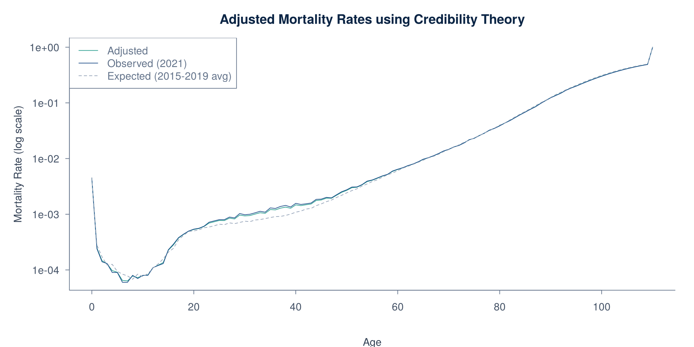
Choosing Z. Z = 0.8 is a judgment input here, used to show the mechanics, and the sample results table further down shows how the answer changes with Z. In practice Z comes from how much data stands behind the observed rates. For example, the limited-fluctuation rule gives full credibility (Z = 1) at about 1,082 deaths, and otherwise Z = √(deaths / 1,082). That requires real death counts, which this life table (scaled to 100,000 births) doesn’t contain. On the log scale the three curves look close. At about half of all ages, the 2021 rate is within 5% of the pre-pandemic average, but at some adult ages it is up to 51% higher.
We will now use the adjusted mortality rates in the life insurance calculations.
adjusted_qx), survival
probabilities (kpx), and discount factors based on a
constant interest rate (i). The adjusted EPV lies between
the EPVs from the 2021 rates and from the 2015-2019 rates, closer to
2021 because Z = 0.8.
# Function to compute the EPV of a whole life insurance with adjusted mortality rates
whole_life_insurance_adjusted <- function(age, i, adjusted_qx) {
# same calculation as whole_life_insurance(), using the adjusted rates
whole_life_insurance(age, i, data.frame(qx = adjusted_qx))
}
# EPV of whole life insurance for a 20-year-old at 2% interest rate using adjusted mortality rates
epv_adjusted <- whole_life_insurance_adjusted(20, 0.02, adjusted_qx)
cat("EPV of whole life insurance with adjusted mortality rates =", epv_adjusted, "\n")## EPV of whole life insurance with adjusted mortality rates = 0.3012119cat("Using 2021 rates only =", whole_life_insurance(20, 0.02, life_table_2021),
" using 2015-2019 rates only =", whole_life_insurance(20, 0.02, data.frame(qx = expected_qx)))## Using 2021 rates only = 0.301949 using 2015-2019 rates only = 0.2982445library(shiny)
ui <- fluidPage(
titlePanel("Life Insurance Calculator with Adjusted Mortality Rates"),
sidebarLayout(
sidebarPanel(
numericInput("age", "Age:", 20, min = 0, max = 110),
numericInput("interest", "Interest Rate:", 0.02, min = 0, max = 0.2, step = 0.001),
numericInput("credibility", "Credibility Factor:", 0.8, min = 0, max = 1, step = 0.1),
selectInput("type", "Insurance Type:",
choices = c("Whole Life" = "whole",
"Temporary" = "temp",
"Deferred" = "deferred")),
conditionalPanel(
condition = "input.type == 'temp' || input.type == 'deferred'",
numericInput("term", "Term/Deferment (years):", 10, min = 1, max = 50)
)
),
mainPanel(
h3("Expected Present Value:"),
textOutput("epv")
)
)
)
server <- function(input, output) {
output$epv <- renderText({
adjusted_qx <- simple_credibility(observed_qx, expected_qx, input$credibility)
adjusted_table <- data.frame(Age = life_table_2021_filtered$Age, qx = adjusted_qx)
epv <- switch(input$type,
"whole" = whole_life_insurance_adjusted(input$age, input$interest, adjusted_qx),
"temp" = temporary_life_insurance(input$age, input$term, input$interest, adjusted_table),
"deferred" = deferred_life_insurance(input$age, input$term, input$interest, adjusted_table))
paste0("$", round(epv, 2))
})
}
shinyApp(ui = ui, server = server)The live Shiny app can’t run on this static GitHub Pages site.
Open index.Rmd in RStudio, run the earlier chunks, then run
this chunk to launch it. Sample results:
| Credibility factor | Whole life, age 20 | Whole life, age 40 | Whole life, age 65 |
|---|---|---|---|
| 0.0 | 0.2982 | 0.4321 | 0.6647 |
| 0.5 | 0.3001 | 0.4332 | 0.6642 |
| 0.8 | 0.3012 | 0.4338 | 0.6639 |
| 1.0 | 0.3019 | 0.4343 | 0.6637 |
We will use GLMs with various link functions to model mortality rates.
Overview:
We model qx as a binomial probability (dx
deaths out of lx alive) with Age and Year as predictors, and compare
three link functions, which are three different shapes for how the
predictors map to a probability. We use ages 30-100 for the same reasons
as the Gompertz model above. An earlier version also used mx as a
predictor; qx is calculated directly from mx, so that just fed the
answer into the model.
1. Logit: log(q / (1 −
q)) is linear in the predictors. This is ordinary logistic
regression.
2. Probit: the predictors shift a
standard normal quantile.
3. Complementary
log-log: log(−log(1 − q)) is linear. Since −log(1 − q) is the
cumulative hazard over the year, this is equivalent to a log-linear
(Gompertz-type) model for the force of mortality, so it is the natural
choice for mortality.
Model comparison: lower
AIC means a better fit. Because lx is scaled to 100,000 births, the AIC
values only make sense relative to each other, not on their own.
adults_all <- subset(life_table_all, Age >= 30 & Age <= 100)
glm_logit <- glm(cbind(dx, lx - dx) ~ Age + Year, family = binomial(link = "logit"), data = adults_all)
glm_probit <- glm(cbind(dx, lx - dx) ~ Age + Year, family = binomial(link = "probit"), data = adults_all)
glm_cloglog <- glm(cbind(dx, lx - dx) ~ Age + Year, family = binomial(link = "cloglog"), data = adults_all)
# Compare the models using AIC
aics <- AIC(glm_logit, glm_probit, glm_cloglog)
aics## df AIC
## glm_logit 3 224565.7
## glm_probit 3 460295.8
## glm_cloglog 3 218389.9best_glm <- list(glm_logit, glm_probit, glm_cloglog)[[which.min(aics$AIC)]]
cat("Best model by AIC:", rownames(aics)[which.min(aics$AIC)], "\n")## Best model by AIC: glm_cloglog## Estimate Std. Error z value Pr(>|z|)
## (Intercept) 11.66066934 2.226306e-02 523.7676 0
## Age 0.09074285 2.528747e-05 3588.4508 0
## Year -0.01088921 1.145035e-05 -950.9934 0# Actual vs predicted, drawn separately for each year so lines don't join across years
plot(NULL, xlim = c(30, 100), ylim = range(adults_all$qx), log = "y",
xlab = "Age", ylab = "Probability of Death (log scale)",
main = "Actual (points) vs Predicted (lines) Mortality Rates (GLM)")
for (j in seq_along(show_years)) {
yr <- subset(adults_all, Year == show_years[j])
points(yr$Age, yr$qx, pch = 20, cex = 0.6, col = cols[j])
lines(yr$Age, predict(best_glm, newdata = yr, type = "response"), col = cols[j], lwd = 2)
}
legend("topleft", legend = show_years, col = cols, lwd = 2, title = "Year")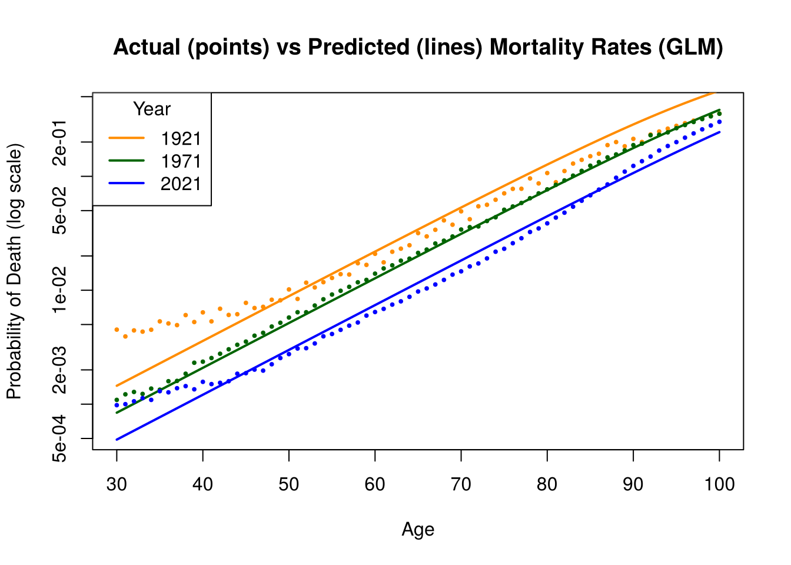
The complementary log-log link fits best, as expected, since it corresponds to mortality growing exponentially with age.
We will use an ARIMA model to forecast life expectancy at birth.
An earlier version averaged qx over all ages 0-110 each year and forecast that. That average isn’t a meaningful mortality measure: it gives the same weight to age 109 as to age 30, so it is dominated by the very old ages where qx is 0.3 to 1. Life expectancy at birth summarises the whole year’s mortality in one number that people understand, so we forecast that instead.
auto.arima() chooses the ARIMA
orders by AIC. Life expectancy trends upward rather than fluctuating
around a fixed level, so the model works with differences of the series
(the “I” in ARIMA) instead of the raw values.
##
## Attaching package: 'forecast'## The following object is masked from 'package:nlme':
##
## getResponsee0_series <- subset(life_table_all, Age == 0)
e0_ts <- ts(e0_series$ex, start = min(e0_series$Year))
arima_model <- auto.arima(e0_ts)
summary(arima_model)## Series: e0_ts
## ARIMA(0,2,1)
##
## Coefficients:
## ma1
## -0.9645
## s.e. 0.0279
##
## sigma^2 = 0.1993: log likelihood = -61.46
## AIC=126.91 AICc=127.04 BIC=132.1
##
## Training set error measures:
## ME RMSE MAE MPE MAPE MASE
## Training set -0.04096027 0.4397968 0.2611242 -0.05031993 0.3948242 0.7549124
## ACF1
## Training set -0.1156963forecasts_arima <- forecast(arima_model, h = 10)
plot(forecasts_arima, main = "Forecast of Life Expectancy at Birth (ARIMA)", xlab = "Year",
ylab = expression(e[0]), fcol = "red")
lines(e0_ts, col = "blue")
legend("bottomright", legend = c("Historical", "Forecast"), col = c("blue", "red"), lty = 1)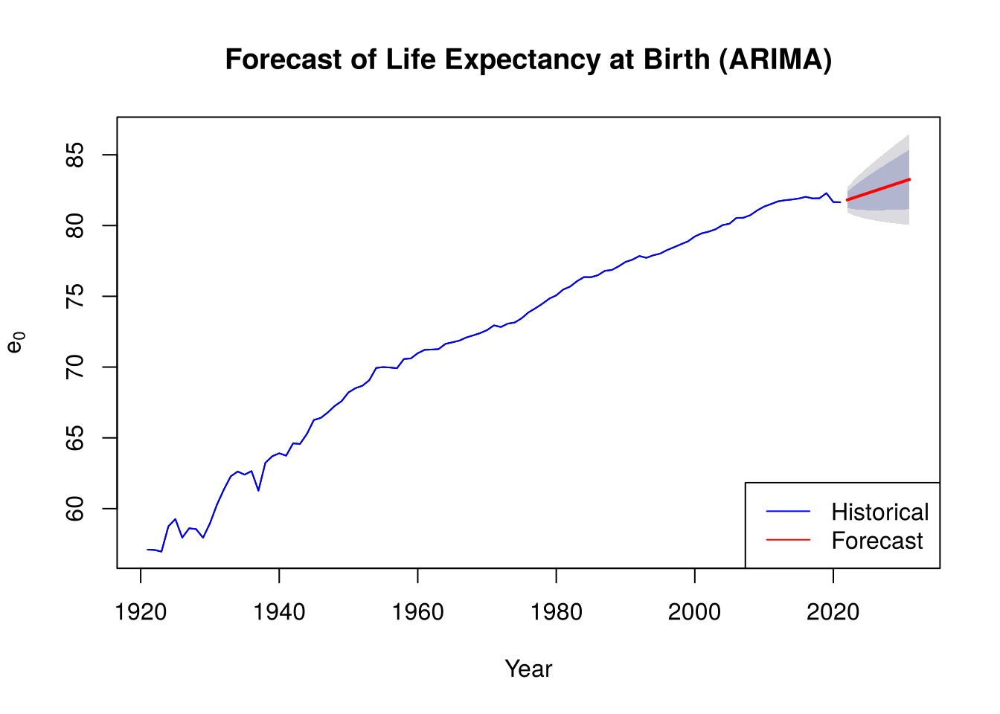
## Point Forecast Lo 80 Hi 80 Lo 95 Hi 95
## 2022 81.81109 81.23889 82.38328 80.93598 82.68619
## 2023 81.97217 81.14845 82.79589 80.71240 83.23195
## 2024 82.13326 81.10654 83.15998 80.56303 83.70349
## 2025 82.29434 81.08805 83.50063 80.44948 84.13920
## 2026 82.45543 81.08346 83.82739 80.35719 84.55367
## 2027 82.61651 81.08797 84.14506 80.27881 84.95422
## 2028 82.77760 81.09878 84.45642 80.21007 85.34513
## 2029 82.93868 81.11411 84.76326 80.14824 85.72913
## 2030 83.09977 81.13275 85.06679 80.09147 86.10807
## 2031 83.26086 81.15382 85.36789 80.03843 86.48328How we interpret these results:
The blue line is life expectancy at birth from 1921 to 2021, and the
red line is the forecast for the next 10 years, with 80% and 95%
prediction intervals shaded. auto.arima() chose
ARIMA(0,2,1), which continues the recent upward trend from the 2021
starting point. That starting point is depressed by the pandemic, and a
pure time-series model can’t know whether that dip is temporary. This is
one reason actuaries use structured models such as Lee-Carter for
mortality projections.